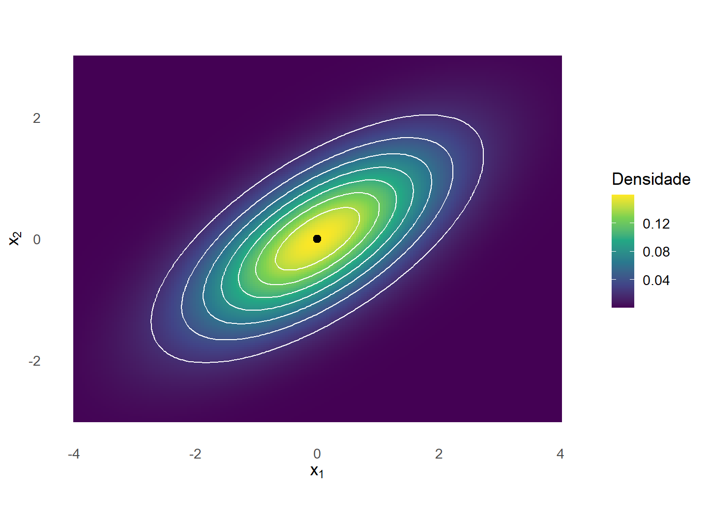
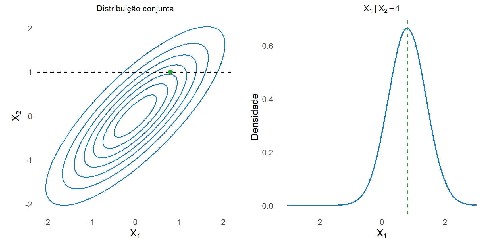
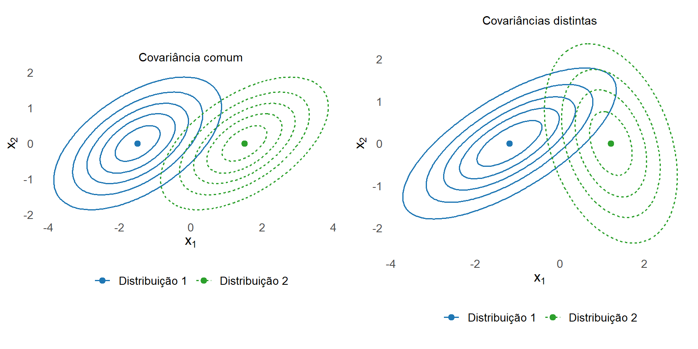

10 Distribuição Normal Multivariada
O Capítulo 8 desenvolveu o vetor de médias, a matriz de covariâncias e a geometria associada à dispersão de um vetor aleatório. Em uma distribuição geral, esses dois primeiros momentos não determinam completamente o comportamento conjunto das componentes. Vetores aleatórios com distribuições distintas podem possuir o mesmo vetor de médias e a mesma matriz de covariâncias.
Na família normal multivariada, essa situação é diferente. O vetor de médias e a matriz de covariâncias determinam toda a distribuição. Além disso, combinações lineares, transformações afins, distribuições marginais e distribuições condicionais permanecem dentro da família normal (Mardia; Kent; Taylor, 2024).
O objetivo deste capítulo é construir esse modelo probabilístico e relacioná-lo aos resultados geométricos do capítulo anterior. Serão estudados os casos não singular e singular, a função densidade, as distribuições marginais e condicionais, a independência entre blocos, o branqueamento e a distribuição probabilística da distância de Mahalanobis.
10.1 Definição e construção
10.1.1 Definição por combinações lineares
Considere um vetor aleatório
\[ \boldsymbol{\mathsf X} = \begin{bmatrix} X_1\\ X_2\\ \vdots\\ X_p \end{bmatrix} \in \mathbb{R}^p, \]
com vetor de médias
\[ E \left( \boldsymbol{\mathsf X} \right) = \boldsymbol{\mu} \]
e matriz de covariâncias
\[ \operatorname{Cov} \left( \boldsymbol{\mathsf X} \right) = \boldsymbol{\Sigma}. \]
A distribuição normal multivariada pode ser caracterizada pela normalidade de todas as combinações lineares de suas componentes, incluindo combinações degeneradas com variância igual a zero (Eaton, 2007).
Definição 10.1 (Distribuição normal multivariada) O vetor aleatório \(\boldsymbol{\mathsf X}\in\mathbb{R}^p\) possui distribuição normal multivariada se, para todo vetor constante \(\mathbf a\in\mathbb{R}^p\), a combinação linear
\[ \mathbf a^\top \boldsymbol{\mathsf X} \]
possui distribuição normal univariada, admitindo-se o caso degenerado em que sua variância é zero.
Quando
\[ E \left( \boldsymbol{\mathsf X} \right) = \boldsymbol{\mu} \]
e
\[ \operatorname{Cov} \left( \boldsymbol{\mathsf X} \right) = \boldsymbol{\Sigma}, \]
escreve-se
\[ \boldsymbol{\mathsf X} \sim N_p \left( \boldsymbol{\mu}, \boldsymbol{\Sigma} \right). \tag{10.1}\]
Pelas propriedades da média e da covariância, para qualquer \(\mathbf a\in\mathbb{R}^p\),
\[ E \left( \mathbf a^\top \boldsymbol{\mathsf X} \right) = \mathbf a^\top \boldsymbol{\mu} \]
e
\[ \operatorname{Var} \left( \mathbf a^\top \boldsymbol{\mathsf X} \right) = \mathbf a^\top \boldsymbol{\Sigma} \mathbf a. \]
Consequentemente,
\[ \mathbf a^\top \boldsymbol{\mathsf X} \sim N \left( \mathbf a^\top \boldsymbol{\mu}, \mathbf a^\top \boldsymbol{\Sigma} \mathbf a \right). \tag{10.2}\]
Se
\[ \mathbf a^\top \boldsymbol{\Sigma} \mathbf a = 0, \]
a distribuição normal da combinação linear é degenerada, e
\[ \mathbf a^\top \boldsymbol{\mathsf X} = \mathbf a^\top \boldsymbol{\mu} \]
com probabilidade 1.
Escolhendo \(\mathbf a=\mathbf e_j\), em que \(\mathbf e_j\) é o \(j\)-ésimo vetor da base canônica, obtém-se
\[ X_j \sim N \left( \mu_j, \sigma_{jj} \right). \]
Portanto, cada componente de um vetor normal multivariado possui distribuição normal univariada.
Quando \(\|\mathbf a\|=1\), a variável \(\mathbf a^\top\boldsymbol{\mathsf X}\) pode ser interpretada como a coordenada da projeção de \(\boldsymbol{\mathsf X}\) na direção de \(\mathbf a\). A definição estabelece, assim, que toda projeção unidimensional do vetor possui distribuição normal.
10.1.2 Construção afim a partir do vetor normal padrão
A distribuição normal multivariada pode ser construída a partir de variáveis normais padrão independentes.
Considere
\[ \boldsymbol{\mathsf Z} = \begin{bmatrix} Z_1\\ Z_2\\ \vdots\\ Z_r \end{bmatrix}, \]
em que
\[ Z_j \sim N(0,1), \qquad j=1,\ldots,r, \]
e as componentes são mutuamente independentes.
Para qualquer
\[ \mathbf c \in \mathbb{R}^r, \]
a combinação linear
\[ \mathbf c^\top \boldsymbol{\mathsf Z} = \sum_{j=1}^{r} c_jZ_j \]
é normal, pois é uma combinação linear de variáveis normais independentes. Além disso,
\[ E \left( \boldsymbol{\mathsf Z} \right) = \mathbf 0 \]
e
\[ \operatorname{Cov} \left( \boldsymbol{\mathsf Z} \right) = \mathbf I_r. \]
Portanto, pela definição de normalidade multivariada,
\[ \boldsymbol{\mathsf Z} \sim N_r \left( \mathbf 0, \mathbf I_r \right). \]
Sejam ainda
\[ \mathbf A \in \mathbb{R}^{p\times r} \]
e
\[ \boldsymbol{\mu} \in \mathbb{R}^p. \]
Proposição 10.1 (Construção afim de um vetor normal) Defina
\[ \boldsymbol{\mathsf X} = \boldsymbol{\mu} + \mathbf A \boldsymbol{\mathsf Z}. \tag{10.3}\]
Então,
\[ \boldsymbol{\mathsf X} \sim N_p \left( \boldsymbol{\mu}, \mathbf A\mathbf A^\top \right). \tag{10.4}\]
Comprovação. A média de \(\boldsymbol{\mathsf X}\) é
\[ \begin{aligned} E \left( \boldsymbol{\mathsf X} \right) &= E \left( \boldsymbol{\mu} + \mathbf A \boldsymbol{\mathsf Z} \right)\\ &= \boldsymbol{\mu} + \mathbf A E \left( \boldsymbol{\mathsf Z} \right)\\ &= \boldsymbol{\mu}. \end{aligned} \]
Sua matriz de covariâncias é
\[ \begin{aligned} \operatorname{Cov} \left( \boldsymbol{\mathsf X} \right) &= \operatorname{Cov} \left( \mathbf A \boldsymbol{\mathsf Z} \right)\\ &= \mathbf A \operatorname{Cov} \left( \boldsymbol{\mathsf Z} \right) \mathbf A^\top\\ &= \mathbf A \mathbf I_r \mathbf A^\top\\ &= \mathbf A \mathbf A^\top. \end{aligned} \tag{10.5}\]
Para qualquer \(\mathbf a\in\mathbb{R}^p\),
\[ \begin{aligned} \mathbf a^\top \boldsymbol{\mathsf X} &= \mathbf a^\top \boldsymbol{\mu} + \mathbf a^\top \mathbf A \boldsymbol{\mathsf Z}\\ &= \mathbf a^\top \boldsymbol{\mu} + \left( \mathbf A^\top \mathbf a \right)^\top \boldsymbol{\mathsf Z}. \end{aligned} \]
Como toda combinação linear das componentes de \(\boldsymbol{\mathsf Z}\) é normal, segue que \(\mathbf a^\top\boldsymbol{\mathsf X}\) é normal para todo \(\mathbf a\). Portanto, \(\boldsymbol{\mathsf X}\) possui distribuição normal multivariada.
O resultado mostra que a dependência entre as componentes de \(\boldsymbol{\mathsf X}\) é introduzida pela transformação linear determinada por \(\mathbf A\). Embora as componentes de \(\boldsymbol{\mathsf Z}\) sejam independentes, as componentes de \(\mathbf A\boldsymbol{\mathsf Z}\) podem ser correlacionadas.
Pelo Teorema thm-estrutura-matriz-covariancias, toda matriz de covariâncias é simétrica e positiva semidefinida. Essas propriedades também garantem uma fatoração da forma
\[ \boldsymbol{\Sigma} = \mathbf A \mathbf A^\top. \tag{10.6}\]
Para construir essa fatoração, considere a decomposição espectral
\[ \boldsymbol{\Sigma} = \mathbf Q \boldsymbol{\Lambda} \mathbf Q^\top, \]
em que os autovalores são não negativos. Definindo
\[ \mathbf A = \mathbf Q \boldsymbol{\Lambda}^{1/2}, \]
obtém-se
\[ \mathbf A \mathbf A^\top = \mathbf Q \boldsymbol{\Lambda}^{1/2} \boldsymbol{\Lambda}^{1/2} \mathbf Q^\top = \boldsymbol{\Sigma}. \]
Portanto, para qualquer vetor \(\boldsymbol{\mu}\in\mathbb{R}^p\) e qualquer matriz simétrica e semidefinida positiva \(\boldsymbol{\Sigma}\), pode-se construir um vetor com distribuição
\[ N_p \left( \boldsymbol{\mu}, \boldsymbol{\Sigma} \right). \]
Quando \(\boldsymbol{\Sigma}\) é positiva definida, pode-se utilizar sua raiz quadrada simétrica e escrever
\[ \boldsymbol{\mathsf X} = \boldsymbol{\mu} + \boldsymbol{\Sigma}^{1/2} \boldsymbol{\mathsf Z}, \qquad \boldsymbol{\mathsf Z} \sim N_p \left( \mathbf 0, \mathbf I_p \right). \tag{10.7}\]
10.1.3 Determinação pelos parâmetros
Em uma distribuição geral, o vetor de médias e a matriz de covariâncias não determinam a distribuição conjunta. O Teorema de Cramér–Wold estabelece que a distribuição de um vetor aleatório é determinada pelo conjunto das distribuições de todas as suas projeções lineares unidimensionais (Eaton, 2007).
Teorema 10.1 (Teorema de Cramér–Wold) Sejam \(\boldsymbol{\mathsf X}\) e \(\boldsymbol{\mathsf Y}\) vetores aleatórios em \(\mathbb{R}^p\). Então,
\[ \boldsymbol{\mathsf X} \overset{d}{=} \boldsymbol{\mathsf Y} \]
se, e somente se,
\[ \mathbf a^\top \boldsymbol{\mathsf X} \overset{d}{=} \mathbf a^\top \boldsymbol{\mathsf Y} \]
para todo vetor \(\mathbf a\in\mathbb{R}^p\).
A implicação direta é imediata: vetores com a mesma distribuição produzem combinações lineares com a mesma distribuição. A implicação inversa constitui o conteúdo central do teorema. Ela estabelece que o conjunto de todas as distribuições das projeções lineares determina a distribuição conjunta do vetor.
Proposição 10.2 (Determinação da distribuição normal pelos parâmetros) Se
\[ \boldsymbol{\mathsf X} \sim N_p \left( \boldsymbol{\mu}, \boldsymbol{\Sigma} \right) \]
e
\[ \boldsymbol{\mathsf Y} \sim N_p \left( \boldsymbol{\mu}, \boldsymbol{\Sigma} \right), \]
então
\[ \boldsymbol{\mathsf X} \overset{d}{=} \boldsymbol{\mathsf Y}. \]
Comprovação. Para qualquer vetor \(\mathbf a\in\mathbb{R}^p\),
\[ \mathbf a^\top \boldsymbol{\mathsf X} \sim N \left( \mathbf a^\top \boldsymbol{\mu}, \mathbf a^\top \boldsymbol{\Sigma} \mathbf a \right) \]
e
\[ \mathbf a^\top \boldsymbol{\mathsf Y} \sim N \left( \mathbf a^\top \boldsymbol{\mu}, \mathbf a^\top \boldsymbol{\Sigma} \mathbf a \right). \]
Portanto,
\[ \mathbf a^\top \boldsymbol{\mathsf X} \overset{d}{=} \mathbf a^\top \boldsymbol{\mathsf Y} \]
para todo \(\mathbf a\in\mathbb{R}^p\). Pelo Teorema thm-cramer-wold,
\[ \boldsymbol{\mathsf X} \overset{d}{=} \boldsymbol{\mathsf Y}. \]
Assim, na família normal multivariada, o vetor de médias e a matriz de covariâncias especificam completamente a distribuição. Essa propriedade justifica a notação utilizada em Equação eq-notacao-normal-multivariada.
10.1.4 Aprofundamento: caso singular e suporte efetivo
A matriz \(\boldsymbol{\Sigma}\) de uma distribuição normal multivariada pode ser semidefinida positiva e singular. Nesse caso, algumas combinações lineares possuem variância zero e a distribuição fica concentrada em um subespaço afim de dimensão inferior a \(p\) (Eaton, 2007).
Definição 10.2 (Distribuição normal multivariada singular) Uma distribuição
\[ N_p \left( \boldsymbol{\mu}, \boldsymbol{\Sigma} \right) \]
é denominada singular ou degenerada quando
\[ \operatorname{posto} \left( \boldsymbol{\Sigma} \right) = r < p. \]
Quando
\[ \operatorname{posto} \left( \boldsymbol{\Sigma} \right) = p, \]
a distribuição é denominada não singular.
Se \(\operatorname{posto}(\boldsymbol{\Sigma})=r\), a decomposição espectral pode ser escrita como
\[ \boldsymbol{\Sigma} = \mathbf Q_r \boldsymbol{\Lambda}_r \mathbf Q_r^\top, \]
em que
\[ \mathbf Q_r \in \mathbb{R}^{p\times r} \]
contém os autovetores associados aos autovalores positivos e
\[ \boldsymbol{\Lambda}_r = \operatorname{diag} \left( \lambda_1,\ldots,\lambda_r \right), \qquad \lambda_j>0. \]
Definindo
\[ \mathbf A_r = \mathbf Q_r \boldsymbol{\Lambda}_r^{1/2}, \]
tem-se
\[ \boldsymbol{\Sigma} = \mathbf A_r \mathbf A_r^\top \]
e a representação
\[ \boldsymbol{\mathsf X} \overset{d}{=} \boldsymbol{\mu} + \mathbf A_r \boldsymbol{\mathsf Z}, \qquad \boldsymbol{\mathsf Z} \sim N_r \left( \mathbf 0, \mathbf I_r \right). \tag{10.8}\]
Proposição 10.3 (Suporte efetivo da normal singular) Se
\[ \boldsymbol{\mathsf X} \sim N_p \left( \boldsymbol{\mu}, \boldsymbol{\Sigma} \right) \]
e
\[ \operatorname{posto} \left( \boldsymbol{\Sigma} \right) = r < p, \]
então
\[ P \left[ \boldsymbol{\mathsf X} \in \boldsymbol{\mu} + \mathcal C \left( \boldsymbol{\Sigma} \right) \right] = 1. \tag{10.9}\]
Além disso, o suporte da distribuição é o subespaço afim
\[ \boldsymbol{\mu} + \mathcal C \left( \boldsymbol{\Sigma} \right), \]
que possui dimensão \(r\).
Comprovação. Pela representação Equação eq-representacao-normal-singular,
\[ \boldsymbol{\mathsf X} \overset d= \boldsymbol{\mu} + \mathbf A_r \boldsymbol{\mathsf Z}, \]
em que
\[ \boldsymbol{\mathsf Z} \sim N_r \left( \mathbf 0, \mathbf I_r \right) \]
e
\[ \mathbf A_r = \mathbf Q_r \boldsymbol{\Lambda}_r^{1/2}. \]
Como \(\boldsymbol{\Lambda}_r^{1/2}\) é invertível,
\[ \mathcal C \left( \mathbf A_r \right) = \mathcal C \left( \mathbf Q_r \right). \]
Além disso,
\[ \mathcal C \left( \boldsymbol{\Sigma} \right) = \mathcal C \left( \mathbf Q_r \right). \]
Portanto,
\[ \mathcal C \left( \mathbf A_r \right) = \mathcal C \left( \boldsymbol{\Sigma} \right). \]
Como
\[ \mathbf A_r \boldsymbol{\mathsf Z} \in \mathcal C \left( \mathbf A_r \right) \]
com probabilidade 1,
\[ P \left[ \boldsymbol{\mathsf X} \in \boldsymbol{\mu} + \mathcal C \left( \boldsymbol{\Sigma} \right) \right] = 1. \]
A matriz \(\mathbf A_r\) possui posto coluna completo \(r\), de modo que a aplicação
\[ \mathbf z \mapsto \boldsymbol{\mu} + \mathbf A_r\mathbf z \]
é uma transformação linear-afim bijetiva entre \(\mathbb{R}^r\) e
\[ \boldsymbol{\mu} + \mathcal C \left( \boldsymbol{\Sigma} \right). \]
Como a normal padrão em \(\mathbb{R}^r\) possui densidade estritamente positiva em todo o espaço, todo conjunto relativamente aberto e não vazio desse subespaço afim possui probabilidade positiva.
Consequentemente, o suporte da distribuição é exatamente
\[ \boldsymbol{\mu} + \mathcal C \left( \boldsymbol{\Sigma} \right), \]
cuja dimensão é
\[ r. \]
Equivalentemente, se
\[ \mathbf a \in \mathcal N \left( \boldsymbol{\Sigma} \right), \]
então
\[ \operatorname{Var} \left[ \mathbf a^\top \left( \boldsymbol{\mathsf X} - \boldsymbol{\mu} \right) \right] = \mathbf a^\top \boldsymbol{\Sigma} \mathbf a = 0, \]
e, portanto,
\[ \mathbf a^\top \left( \boldsymbol{\mathsf X} - \boldsymbol{\mu} \right) = 0 \]
com probabilidade 1.
Assim, as direções pertencentes ao núcleo de \(\boldsymbol{\Sigma}\) correspondem exatamente às direções nas quais não existe variabilidade probabilística.
A distribuição singular não possui densidade em relação ao volume de dimensão \(p\) em \(\mathbb{R}^p\), pois toda a probabilidade está concentrada em um subconjunto de dimensão inferior. Ela pode, entretanto, ser descrita por uma densidade em relação à medida de Lebesgue de dimensão \(r\) naturalmente identificada com seu suporte afim.
Exemplo 10.1 (Normal bivariada concentrada em uma reta) Considere
\[ Z \sim N(0,1) \]
e defina
\[ \boldsymbol{\mathsf X} = \begin{bmatrix} X_1\\ X_2 \end{bmatrix} = \begin{bmatrix} Z\\ 2Z \end{bmatrix}. \]
Essa construção pode ser escrita como
\[ \boldsymbol{\mathsf X} = \begin{bmatrix} 1\\ 2 \end{bmatrix} Z. \]
Logo,
\[ \boldsymbol{\mathsf X} \sim N_2 \left( \begin{bmatrix} 0\\ 0 \end{bmatrix}, \begin{bmatrix} 1 & 2\\ 2 & 4 \end{bmatrix} \right). \]
A matriz de covariâncias possui posto 1, pois sua segunda coluna é o dobro da primeira. Além disso,
\[ X_2 = 2X_1 \]
com probabilidade 1.
Toda a distribuição está concentrada na reta
\[ x_2 = 2x_1, \]
e não em todo o plano \(\mathbb{R}^2\).
Quando
\[ \boldsymbol{\Sigma} \succ \mathbf 0, \]
a distribuição é não singular,
\[ \det \left( \boldsymbol{\Sigma} \right) > 0, \]
e \(\boldsymbol{\Sigma}^{-1}\) existe. Nesse caso, a distribuição possui uma função densidade em todo o espaço \(\mathbb{R}^p\), que será desenvolvida na seção seguinte.
10.2 Densidade no caso não singular
A definição por combinações lineares também abrange distribuições normais singulares. Uma função densidade em relação à medida de Lebesgue em \(\mathbb{R}^p\), entretanto, existe somente quando a matriz de covariâncias é positiva definida (Mardia; Kent; Taylor, 2024):
\[ \boldsymbol{\Sigma} \succ \mathbf 0. \]
Nessa situação, \(\boldsymbol{\Sigma}\) é invertível e
\[ \det \left( \boldsymbol{\Sigma} \right) > 0. \]
10.2.1 Função densidade e log-densidade
Proposição 10.4 (Densidade da normal multivariada não singular) Se
\[ \boldsymbol{\mathsf X} \sim N_p \left( \boldsymbol{\mu}, \boldsymbol{\Sigma} \right), \]
com
\[ \boldsymbol{\Sigma} \succ \mathbf 0, \]
então \(\boldsymbol{\mathsf X}\) possui densidade em relação à medida de Lebesgue em \(\mathbb{R}^p\), dada por
\[ f_{\boldsymbol{\mathsf X}} \left( \mathbf x \right) = \frac{ 1 }{ (2\pi)^{p/2} \det \left( \boldsymbol{\Sigma} \right)^{1/2} } \exp \left\{ -\frac{1}{2} \left( \mathbf x-\boldsymbol{\mu} \right)^\top \boldsymbol{\Sigma}^{-1} \left( \mathbf x-\boldsymbol{\mu} \right) \right\}, \tag{10.10}\]
para todo
\[ \mathbf x \in \mathbb{R}^p. \]
Comprovação. Como
\[ \boldsymbol{\Sigma} \succ \mathbf 0, \]
a raiz quadrada simétrica
\[ \boldsymbol{\Sigma}^{1/2} \]
é invertível. Pela representação afim da normal multivariada,
\[ \boldsymbol{\mathsf X} \overset d= \boldsymbol{\mu} + \boldsymbol{\Sigma}^{1/2} \boldsymbol{\mathsf Z}, \]
em que
\[ \boldsymbol{\mathsf Z} \sim N_p \left( \mathbf 0, \mathbf I_p \right). \]
Como as componentes de \(\boldsymbol{\mathsf Z}\) são normais padrão independentes, sua densidade conjunta é
\[ f_{\boldsymbol{\mathsf Z}} \left( \mathbf z \right) = \frac{1}{(2\pi)^{p/2}} \exp \left( -\frac12 \mathbf z^\top \mathbf z \right). \]
Considere a transformação
\[ \mathbf x = \boldsymbol{\mu} + \boldsymbol{\Sigma}^{1/2} \mathbf z. \]
Sua inversa é
\[ \mathbf z = \boldsymbol{\Sigma}^{-1/2} \left( \mathbf x-\boldsymbol{\mu} \right), \]
e o valor absoluto do determinante da Jacobiana da transformação inversa é
\[ \left| \det \left( \boldsymbol{\Sigma}^{-1/2} \right) \right| = \det \left( \boldsymbol{\Sigma} \right)^{-1/2}. \]
Pela fórmula de mudança de variáveis,
\[ \begin{aligned} f_{\boldsymbol{\mathsf X}} \left( \mathbf x \right) &= f_{\boldsymbol{\mathsf Z}} \left[ \boldsymbol{\Sigma}^{-1/2} \left( \mathbf x-\boldsymbol{\mu} \right) \right] \det \left( \boldsymbol{\Sigma} \right)^{-1/2}\\ &= \frac{ 1 }{ (2\pi)^{p/2} \det \left( \boldsymbol{\Sigma} \right)^{1/2} } \exp \left\{ -\frac12 \left( \mathbf x-\boldsymbol{\mu} \right)^\top \boldsymbol{\Sigma}^{-1} \left( \mathbf x-\boldsymbol{\mu} \right) \right\}. \end{aligned} \]
Como a distribuição é contínua,
\[ P \left( \boldsymbol{\mathsf X} = \mathbf x \right) = 0 \]
para qualquer ponto fixo \(\mathbf x\in\mathbb{R}^p\).
As probabilidades são obtidas pela integração da densidade sobre regiões do espaço:
\[ P \left( \boldsymbol{\mathsf X} \in \mathcal A \right) = \int_{\mathcal A} f_{\boldsymbol{\mathsf X}} \left( \mathbf x \right) \,d\mathbf x, \tag{10.11}\]
em que
\[ \mathcal A \subseteq \mathbb{R}^p. \]
Como consequência da construção anterior,
\[ \int_{\mathbb{R}^p} f_{\boldsymbol{\mathsf X}} \left( \mathbf x \right) \,d\mathbf x = 1. \]
O fator
\[ \det \left( \boldsymbol{\Sigma} \right)^{-1/2} \]
surge do Jacobiano da transformação que leva a normal padrão à normal com matriz de covariâncias \(\boldsymbol{\Sigma}\).
A forma quadrática presente no expoente é exatamente a distância quadrática de Mahalanobis ao vetor de médias, desenvolvida no Capítulo 8:
\[ d_M^2 \left( \mathbf x, \boldsymbol{\mu} \right) = \left( \mathbf x-\boldsymbol{\mu} \right)^\top \boldsymbol{\Sigma}^{-1} \left( \mathbf x-\boldsymbol{\mu} \right). \]
Assim, a densidade também pode ser escrita como
\[ f_{\boldsymbol{\mathsf X}} \left( \mathbf x \right) = \frac{ 1 }{ (2\pi)^{p/2} \det \left( \boldsymbol{\Sigma} \right)^{1/2} } \exp \left\{ -\frac{1}{2} d_M^2 \left( \mathbf x, \boldsymbol{\mu} \right) \right\}. \tag{10.12}\]
Para parâmetros fixos, a densidade de um ponto depende de sua posição apenas por meio da distância de Mahalanobis ao centro.
Consequentemente, pontos que possuem a mesma distância de Mahalanobis em relação a \(\boldsymbol{\mu}\) possuem a mesma densidade normal.
Além disso, como a função
\[ c \longmapsto \exp \left( -\frac{c}{2} \right) \]
é estritamente decrescente para \(c\geq0\), a densidade diminui à medida que aumenta a distância de Mahalanobis ao vetor de médias.
A log-densidade é
\[ \begin{aligned} \log f_{\boldsymbol{\mathsf X}} \left( \mathbf x \right) &= -\frac{p}{2} \log(2\pi) - \frac{1}{2} \log \det \left( \boldsymbol{\Sigma} \right) \\ &\quad - \frac{1}{2} \left( \mathbf x-\boldsymbol{\mu} \right)^\top \boldsymbol{\Sigma}^{-1} \left( \mathbf x-\boldsymbol{\mu} \right). \end{aligned} \tag{10.13}\]
A expressão contém três parcelas:
- uma constante determinada pela dimensão \(p\);
- um termo de normalização associado a \(\log\det(\boldsymbol{\Sigma})\);
- um termo de afastamento determinado pela distância quadrática de Mahalanobis.
A estrutura formada pelo log-determinante e pela forma quadrática será retomada no Capítulo 10 na construção da função de verossimilhança para amostras normais multivariadas.
Quando \(p=1\), tem-se
\[ \boldsymbol{\Sigma} = \begin{bmatrix} \sigma^2 \end{bmatrix}, \]
e Equação eq-densidade-normal-multivariada reduz-se à densidade normal univariada:
\[ f_X(x) = \frac{1}{\sqrt{2\pi}\sigma} \exp \left\{ -\frac{(x-\mu)^2}{2\sigma^2} \right\}. \]
10.2.2 Papel da média e da matriz de covariâncias
O vetor \(\boldsymbol{\mu}\) determina a localização da distribuição. Como a forma quadrática de Mahalanobis é não negativa e assume valor zero em \(\mathbf x=\boldsymbol{\mu}\), a densidade atinge seu máximo no vetor de médias:
\[ f_{\boldsymbol{\mathsf X}} \left( \boldsymbol{\mu} \right) = \frac{ 1 }{ (2\pi)^{p/2} \det \left( \boldsymbol{\Sigma} \right)^{1/2} }. \tag{10.14}\]
A matriz \(\boldsymbol{\Sigma}\) determina a escala e a orientação das superfícies de densidade. O determinante aparece no fator de normalização, enquanto \(\boldsymbol{\Sigma}^{-1}\) determina a distância de Mahalanobis presente no expoente.
A interpretação direcional dessa geometria foi desenvolvida no Capítulo 8. No modelo normal, sua consequência adicional é probabilística: a densidade decresce segundo o afastamento medido nessa geometria.
10.2.3 Superfícies de igual densidade
Pela expressão Equação eq-densidade-normal-mahalanobis, dois pontos possuem a mesma densidade quando apresentam a mesma distância de Mahalanobis ao vetor de médias.
Para uma constante \(c>0\), defina
\[ \mathcal S_c = \left\{ \mathbf x\in\mathbb{R}^p: \left( \mathbf x-\boldsymbol{\mu} \right)^\top \boldsymbol{\Sigma}^{-1} \left( \mathbf x-\boldsymbol{\mu} \right) = c \right\}. \tag{10.15}\]
Todos os pontos de \(\mathcal S_c\) possuem densidade
\[ \frac{ 1 }{ (2\pi)^{p/2} \det \left( \boldsymbol{\Sigma} \right)^{1/2} } \exp \left( -\frac{c}{2} \right). \]
Esses conjuntos são denominados superfícies de igual densidade ou superfícies de nível. Em duas dimensões, são elipses; em três dimensões, superfícies elipsoidais; e, em dimensão geral, hipersuperfícies elipsoidais.
Pela geometria desenvolvida no Capítulo 8, a equação
\[ d_M^2 \left( \mathbf x, \boldsymbol{\mu} \right) = c \]
define uma superfície elipsoidal centrada em \(\boldsymbol{\mu}\), orientada pelos autovetores de \(\boldsymbol{\Sigma}\) e com semieixos proporcionais a
\[ \sqrt{c\lambda_j}. \]
A novidade introduzida pelo modelo normal é que essas superfícies geométricas são também superfícies de densidade constante.
A Figura Figura fig-densidade-normal-bivariada apresenta o mapa de densidade e as curvas de nível de uma distribuição normal bivariada.
As curvas de nível são elipses de igual densidade. Sua orientação e extensão são determinadas por \(\boldsymbol{\Sigma}\), enquanto os níveis de preenchimento representam os valores da densidade normal bivariada.
A maior densidade ocorre em \(\boldsymbol{\mu}\) e diminui à medida que aumenta a distância de Mahalanobis em relação ao centro.
A superfície \(\mathcal S_c\) contém apenas os pontos cuja distância quadrática de Mahalanobis é exatamente \(c\). A região interna correspondente é
\[ \mathcal E_c = \left\{ \mathbf x\in\mathbb{R}^p: d_M^2 \left( \mathbf x, \boldsymbol{\mu} \right) \leq c \right\}. \tag{10.16}\]
A probabilidade populacional da região \(\mathcal E_c\) depende do valor de \(c\). Mais adiante, essa probabilidade será obtida a partir da distribuição qui-quadrado da distância quadrática de Mahalanobis sob normalidade.
10.3 Transformações, marginais e padronização
A construção afim apresentada anteriormente partiu de um vetor normal padrão. Nesta seção, estabelece-se uma propriedade mais geral: uma transformação afim de qualquer vetor normal multivariado continua pertencendo à família normal.
Esse fechamento permite obter diretamente as distribuições de combinações lineares, subvectores, projeções e versões padronizadas, sem integrar a densidade conjunta em cada caso (Anderson, 2003).
10.3.1 Fechamento sob transformações afins
Considere
\[ \boldsymbol{\mathsf X} \sim N_p \left( \boldsymbol{\mu}, \boldsymbol{\Sigma} \right), \]
uma matriz constante
\[ \mathbf A \in \mathbb{R}^{m\times p} \]
e um vetor constante
\[ \mathbf b \in \mathbb{R}^m. \]
Proposição 10.5 (Fechamento da família normal sob transformações afins) Se
\[ \boldsymbol{\mathsf Y} = \mathbf A \boldsymbol{\mathsf X} + \mathbf b, \tag{10.17}\]
então
\[ \boldsymbol{\mathsf Y} \sim N_m \left( \mathbf A \boldsymbol{\mu} + \mathbf b, \mathbf A \boldsymbol{\Sigma} \mathbf A^\top \right). \tag{10.18}\]
Comprovação. A média de \(\boldsymbol{\mathsf Y}\) é
\[ \begin{aligned} E \left( \boldsymbol{\mathsf Y} \right) &= E \left( \mathbf A \boldsymbol{\mathsf X} + \mathbf b \right)\\ &= \mathbf A E \left( \boldsymbol{\mathsf X} \right) + \mathbf b\\ &= \mathbf A \boldsymbol{\mu} + \mathbf b. \end{aligned} \]
Sua matriz de covariâncias é
\[ \begin{aligned} \operatorname{Cov} \left( \boldsymbol{\mathsf Y} \right) &= \operatorname{Cov} \left( \mathbf A \boldsymbol{\mathsf X} + \mathbf b \right)\\ &= \mathbf A \boldsymbol{\Sigma} \mathbf A^\top. \end{aligned} \]
Para mostrar a normalidade conjunta, considere qualquer vetor
\[ \mathbf c \in \mathbb{R}^m. \]
A combinação linear das componentes de \(\boldsymbol{\mathsf Y}\) é
\[ \begin{aligned} \mathbf c^\top \boldsymbol{\mathsf Y} &= \mathbf c^\top \left( \mathbf A \boldsymbol{\mathsf X} + \mathbf b \right)\\ &= \left( \mathbf A^\top \mathbf c \right)^\top \boldsymbol{\mathsf X} + \mathbf c^\top \mathbf b. \end{aligned} \]
Como \(\boldsymbol{\mathsf X}\) possui distribuição normal multivariada, a variável
\[ \left( \mathbf A^\top \mathbf c \right)^\top \boldsymbol{\mathsf X} \]
é normal. A adição da constante \(\mathbf c^\top\mathbf b\) preserva a normalidade. Portanto, toda combinação linear das componentes de \(\boldsymbol{\mathsf Y}\) é normal, o que demonstra o resultado.
As transformações
\[ E \left( \boldsymbol{\mathsf Y} \right) = \mathbf A \boldsymbol{\mu} + \mathbf b \]
e
\[ \operatorname{Cov} \left( \boldsymbol{\mathsf Y} \right) = \mathbf A \boldsymbol{\Sigma} \mathbf A^\top \]
valem para vetores aleatórios gerais com momentos de segunda ordem finitos, conforme desenvolvido no Capítulo 8.
A propriedade específica da família normal é o fechamento distribucional:
\[ \boldsymbol{\mathsf X} \text{ normal multivariado} \quad\Longrightarrow\quad \mathbf A \boldsymbol{\mathsf X} + \mathbf b \text{ normal multivariado}. \]
A proposição permanece válida quando \(\mathbf A\) não possui posto completo. Nesse caso,
\[ \mathbf A \boldsymbol{\Sigma} \mathbf A^\top \]
pode ser singular, e a distribuição de \(\boldsymbol{\mathsf Y}\) fica concentrada em um subespaço afim de dimensão inferior a \(m\).
Se \(\mathbf A\) é quadrada e invertível, a transformação produz uma reparametrização afim do espaço e preserva a dimensão efetiva da distribuição.
Se
\[ m<p, \]
a transformação pode representar uma projeção ou redução de dimensão.
Se
\[ m>p, \]
então
\[ \operatorname{posto} \left( \mathbf A \boldsymbol{\Sigma} \mathbf A^\top \right) \leq p < m, \]
de modo que a distribuição transformada é necessariamente singular em \(\mathbb{R}^m\).
Exemplo 10.2 (Transformação de um vetor normal bivariado) Considere
\[ \boldsymbol{\mathsf X} = \begin{bmatrix} X_1\\ X_2 \end{bmatrix} \sim N_2 \left( \begin{bmatrix} 2\\ 1 \end{bmatrix}, \begin{bmatrix} 4 & 1\\ 1 & 2 \end{bmatrix} \right). \]
Defina
\[ \boldsymbol{\mathsf Y} = \begin{bmatrix} Y_1\\ Y_2 \end{bmatrix} = \begin{bmatrix} 1 & 1\\ 1 & -1 \end{bmatrix} \boldsymbol{\mathsf X} + \begin{bmatrix} 0\\ 3 \end{bmatrix}. \]
As componentes transformadas são
\[ Y_1 = X_1+X_2 \]
e
\[ Y_2 = X_1-X_2+3. \]
O vetor de médias é
\[ \begin{aligned} E \left( \boldsymbol{\mathsf Y} \right) &= \begin{bmatrix} 1 & 1\\ 1 & -1 \end{bmatrix} \begin{bmatrix} 2\\ 1 \end{bmatrix} + \begin{bmatrix} 0\\ 3 \end{bmatrix}\\ &= \begin{bmatrix} 3\\ 4 \end{bmatrix}. \end{aligned} \]
A matriz de covariâncias é
\[ \begin{aligned} \operatorname{Cov} \left( \boldsymbol{\mathsf Y} \right) &= \begin{bmatrix} 1 & 1\\ 1 & -1 \end{bmatrix} \begin{bmatrix} 4 & 1\\ 1 & 2 \end{bmatrix} \begin{bmatrix} 1 & 1\\ 1 & -1 \end{bmatrix}\\ &= \begin{bmatrix} 8 & 2\\ 2 & 4 \end{bmatrix}. \end{aligned} \]
Portanto,
\[ \boldsymbol{\mathsf Y} \sim N_2 \left( \begin{bmatrix} 3\\ 4 \end{bmatrix}, \begin{bmatrix} 8 & 2\\ 2 & 4 \end{bmatrix} \right). \]
10.3.2 Distribuição de combinações lineares
A distribuição de uma combinação linear é um caso particular da Proposição prp-transformacao-afim-normal.
Se
\[ \mathbf a \in \mathbb{R}^p \]
e
\[ Y = \mathbf a^\top \boldsymbol{\mathsf X} + b, \]
então
\[ Y \sim N \left( \mathbf a^\top \boldsymbol{\mu} + b, \mathbf a^\top \boldsymbol{\Sigma} \mathbf a \right). \tag{10.19}\]
Essa propriedade permite obter diretamente a distribuição de:
- somas e diferenças entre componentes;
- médias ponderadas;
- contrastes;
- projeções em direções específicas;
- índices construídos como combinações lineares.
Exemplo 10.3 (Soma e diferença de componentes conjuntamente normais) Considere
\[ \begin{bmatrix} X_1\\ X_2 \end{bmatrix} \sim N_2 \left( \begin{bmatrix} \mu_1\\ \mu_2 \end{bmatrix}, \begin{bmatrix} \sigma_1^2 & \sigma_{12}\\ \sigma_{12} & \sigma_2^2 \end{bmatrix} \right). \]
Para
\[ Y_1 = X_1+X_2, \]
tem-se
\[ Y_1 \sim N \left( \mu_1+\mu_2, \sigma_1^2 + \sigma_2^2 + 2\sigma_{12} \right). \]
Para
\[ Y_2 = X_1-X_2, \]
tem-se
\[ Y_2 \sim N \left( \mu_1-\mu_2, \sigma_1^2 + \sigma_2^2 - 2\sigma_{12} \right). \]
A covariância entre \(X_1\) e \(X_2\) aumenta a variância da soma e reduz a variância da diferença quando \(\sigma_{12}>0\). Quando \(\sigma_{12}<0\), ocorre o efeito oposto.
Se
\[ \mathbf a^\top \boldsymbol{\Sigma} \mathbf a = 0, \]
a distribuição da combinação linear é degenerada:
\[ \mathbf a^\top \boldsymbol{\mathsf X} + b = \mathbf a^\top \boldsymbol{\mu} + b \]
com probabilidade 1.
10.3.3 Distribuições marginais
Uma distribuição marginal é obtida selecionando apenas algumas componentes do vetor aleatório.
Considere o particionamento
\[ \boldsymbol{\mathsf X} = \begin{bmatrix} \boldsymbol{\mathsf X}_1\\ \boldsymbol{\mathsf X}_2 \end{bmatrix} \sim N_p \left( \begin{bmatrix} \boldsymbol{\mu}_1\\ \boldsymbol{\mu}_2 \end{bmatrix}, \begin{bmatrix} \boldsymbol{\Sigma}_{11} & \boldsymbol{\Sigma}_{12} \\ \boldsymbol{\Sigma}_{21} & \boldsymbol{\Sigma}_{22} \end{bmatrix} \right), \tag{10.20}\]
em que
\[ \boldsymbol{\mathsf X}_1 \in \mathbb{R}^{p_1}, \qquad \boldsymbol{\mathsf X}_2 \in \mathbb{R}^{p_2}, \]
e
\[ p_1+p_2 = p. \]
Proposição 10.6 (Distribuições marginais da normal multivariada) Sob o particionamento em Equação eq-particionamento-normal,
\[ \boldsymbol{\mathsf X}_1 \sim N_{p_1} \left( \boldsymbol{\mu}_1, \boldsymbol{\Sigma}_{11} \right) \tag{10.21}\]
e
\[ \boldsymbol{\mathsf X}_2 \sim N_{p_2} \left( \boldsymbol{\mu}_2, \boldsymbol{\Sigma}_{22} \right). \tag{10.22}\]
Comprovação. O primeiro bloco pode ser escrito como
\[ \boldsymbol{\mathsf X}_1 = \mathbf A_1 \boldsymbol{\mathsf X}, \]
em que
\[ \mathbf A_1 = \begin{bmatrix} \mathbf I_{p_1} & \mathbf 0 \end{bmatrix}. \]
Pela Proposição prp-transformacao-afim-normal,
\[ \boldsymbol{\mathsf X}_1 \sim N_{p_1} \left( \mathbf A_1 \boldsymbol{\mu}, \mathbf A_1 \boldsymbol{\Sigma} \mathbf A_1^\top \right). \]
Pela estrutura particionada,
\[ \mathbf A_1 \boldsymbol{\mu} = \boldsymbol{\mu}_1 \]
e
\[ \mathbf A_1 \boldsymbol{\Sigma} \mathbf A_1^\top = \boldsymbol{\Sigma}_{11}. \]
O resultado para \(\boldsymbol{\mathsf X}_2\) é obtido de modo análogo.
A distribuição marginal de um bloco depende apenas de seu vetor de médias e de sua matriz de covariâncias. O bloco de covariâncias cruzadas
\[ \boldsymbol{\Sigma}_{12} \]
não aparece nos parâmetros da distribuição marginal de \(\boldsymbol{\mathsf X}_1\), embora seja necessário para descrever a dependência conjunta entre os dois blocos.
Exemplo 10.4 (Marginal de um vetor normal trivariado) Considere
\[ \boldsymbol{\mathsf X} = \begin{bmatrix} X_1\\ X_2\\ X_3 \end{bmatrix} \sim N_3 \left( \begin{bmatrix} 1\\ 2\\ 0 \end{bmatrix}, \begin{bmatrix} 4 & 1 & -1\\ 1 & 3 & 0.5\\ -1 & 0.5 & 2 \end{bmatrix} \right). \]
Selecionando as componentes \(X_1\) e \(X_3\),
\[ \begin{bmatrix} X_1\\ X_3 \end{bmatrix} \sim N_2 \left( \begin{bmatrix} 1\\ 0 \end{bmatrix}, \begin{bmatrix} 4 & -1\\ -1 & 2 \end{bmatrix} \right). \]
A média marginal é formada pelas posições correspondentes do vetor de médias, e a covariância marginal é a submatriz principal associada às variáveis selecionadas.
As distribuições marginais permanecem normais mesmo quando a distribuição conjunta é singular. A matriz de covariâncias marginal pode ser positiva definida ou singular, dependendo das componentes selecionadas.
10.3.4 Padronização marginal e branqueamento
A padronização marginal remove as médias e divide cada componente por seu desvio-padrão.
Suponha que
\[ \sigma_{jj} > 0, \qquad j=1,\ldots,p, \]
e defina
\[ \mathbf D_{\sigma} = \operatorname{diag} \left( \sigma_1,\ldots,\sigma_p \right), \]
em que
\[ \sigma_j = \sqrt{\sigma_{jj}}. \]
O vetor marginalmente padronizado é
\[ \boldsymbol{\mathsf Z}_{\mathrm{pad}} = \mathbf D_{\sigma}^{-1} \left( \boldsymbol{\mathsf X} - \boldsymbol{\mu} \right). \tag{10.23}\]
Pela Proposição prp-transformacao-afim-normal,
\[ \boldsymbol{\mathsf Z}_{\mathrm{pad}} \sim N_p \left( \mathbf 0, \boldsymbol{\mathcal R} \right), \tag{10.24}\]
em que
\[ \boldsymbol{\mathcal R} = \mathbf D_{\sigma}^{-1} \boldsymbol{\Sigma} \mathbf D_{\sigma}^{-1} \]
é a matriz de correlações populacional.
Cada componente satisfaz
\[ Z_{\mathrm{pad},j} \sim N(0,1). \]
Entretanto, as componentes do vetor padronizado não são necessariamente independentes, pois sua matriz de covariâncias é \(\boldsymbol{\mathcal R}\) e pode possuir elementos não nulos fora da diagonal.
Quando
\[ \boldsymbol{\Sigma} \succ \mathbf 0, \]
uma escolha natural é o branqueamento simétrico:
\[ \boldsymbol{\mathsf Z} = \boldsymbol{\Sigma}^{-1/2} \left( \boldsymbol{\mathsf X} - \boldsymbol{\mu} \right). \tag{10.25}\]
Pela Proposição prp-transformacao-afim-normal,
\[ \begin{aligned} \boldsymbol{\mathsf Z} &\sim N_p \left( \mathbf 0, \boldsymbol{\Sigma}^{-1/2} \boldsymbol{\Sigma} \boldsymbol{\Sigma}^{-1/2} \right)\\ &= N_p \left( \mathbf 0, \mathbf I_p \right). \end{aligned} \tag{10.26}\]
Como o vetor branqueado é conjuntamente normal e possui matriz de covariâncias identidade, suas componentes são normais padrão independentes.
A distinção entre padronização marginal e branqueamento é:
\[ \mathbf D_{\sigma}^{-1} \left( \boldsymbol{\mathsf X} - \boldsymbol{\mu} \right) \sim N_p \left( \mathbf 0, \boldsymbol{\mathcal R} \right), \]
enquanto
\[ \boldsymbol{\Sigma}^{-1/2} \left( \boldsymbol{\mathsf X} - \boldsymbol{\mu} \right) \sim N_p \left( \mathbf 0, \mathbf I_p \right). \]
A padronização marginal remove as diferentes escalas das componentes, mas preserva a estrutura de correlações.
O branqueamento transforma toda a matriz de covariâncias em identidade e, portanto, remove simultaneamente as diferenças de escala e as correlações lineares. Sob normalidade conjunta, essa descorrelação implica também independência entre as componentes branqueadas.
O branqueamento não é único. Se
\[ \mathbf Q_0 \]
é ortogonal, então
\[ \mathbf Q_0 \boldsymbol{\Sigma}^{-1/2} \left( \boldsymbol{\mathsf X} - \boldsymbol{\mu} \right) \]
também possui distribuição
\[ N_p \left( \mathbf 0, \mathbf I_p \right). \]
De fato,
\[ \mathbf Q_0 \mathbf I_p \mathbf Q_0^\top = \mathbf I_p. \]
Assim, diferentes branqueamentos podem diferir por uma rotação ou reflexão do espaço já branqueado. O branqueamento simétrico é apenas uma escolha particularmente natural entre essas possibilidades.
No caso singular, o branqueamento não pode utilizar \(\boldsymbol{\Sigma}^{-1/2}\) em todo o espaço, pois a inversa não existe.
Se
\[ \operatorname{posto} \left( \boldsymbol{\Sigma} \right) = r<p, \]
pode-se utilizar a decomposição espectral reduzida
\[ \boldsymbol{\Sigma} = \mathbf Q_r \boldsymbol{\Lambda}_r \mathbf Q_r^\top \]
e definir
\[ \boldsymbol{\mathsf Z}_r = \boldsymbol{\Lambda}_r^{-1/2} \mathbf Q_r^\top \left( \boldsymbol{\mathsf X} - \boldsymbol{\mu} \right). \tag{10.27}\]
Então,
\[ \boldsymbol{\mathsf Z}_r \sim N_r \left( \mathbf 0, \mathbf I_r \right). \tag{10.28}\]
Essa transformação constitui um branqueamento espectral reduzido. Ela primeiro expressa o vetor centralizado nos \(r\) eixos de variância positiva e, em seguida, divide cada coordenada pelo respectivo desvio-padrão espectral.
O resultado pertence a \(\mathbb{R}^r\) e satisfaz
\[ \boldsymbol{\mathsf Z}_r \sim N_r \left( \mathbf 0, \mathbf I_r \right). \]
Assim, o branqueamento singular representa a distribuição em seu espaço efetivo, em vez de tentar construir uma transformação invertível em todo \(\mathbb{R}^p\).
O fechamento por transformações afins também permite analisar conjuntamente blocos de variáveis. Na família normal, a ausência de covariância entre blocos possui uma consequência mais forte do que em distribuições gerais: ela implica independência.
10.4 Independência e distribuições condicionais
Essa equivalência depende da normalidade conjunta e permanece válida no caso normal singular. Variáveis dependentes podem apresentar covariância igual a zero quando sua associação não é adequadamente representada por uma relação linear.
Para blocos pertencentes ao mesmo vetor normal multivariado, a situação é mais restritiva: a covariância cruzada nula é equivalente à independência entre os blocos. Essa equivalência depende da normalidade conjunta e permanece válida no caso normal singular (Anderson, 2003).
10.4.1 Independência entre blocos conjuntamente normais
Considere o vetor particionado
\[ \boldsymbol{\mathsf X} = \begin{bmatrix} \boldsymbol{\mathsf X}_1\\ \boldsymbol{\mathsf X}_2 \end{bmatrix} \sim N_p \left( \begin{bmatrix} \boldsymbol{\mu}_1\\ \boldsymbol{\mu}_2 \end{bmatrix}, \begin{bmatrix} \boldsymbol{\Sigma}_{11} & \boldsymbol{\Sigma}_{12} \\ \boldsymbol{\Sigma}_{21} & \boldsymbol{\Sigma}_{22} \end{bmatrix} \right), \tag{10.29}\]
em que
\[ \boldsymbol{\mathsf X}_1 \in \mathbb{R}^{p_1}, \qquad \boldsymbol{\mathsf X}_2 \in \mathbb{R}^{p_2} \]
e
\[ p_1+p_2 = p. \]
Se os dois blocos são independentes, suas covariâncias cruzadas são nulas:
\[ \boldsymbol{\mathsf X}_1 \perp \boldsymbol{\mathsf X}_2 \quad \Longrightarrow \quad \boldsymbol{\Sigma}_{12} = \mathbf 0. \]
Essa implicação vale para quaisquer vetores aleatórios independentes com segundos momentos finitos. A implicação inversa exige hipóteses adicionais e, em particular, não é válida para distribuições conjuntas gerais.
Teorema 10.2 (Independência de blocos conjuntamente normais) Para os blocos do vetor normal multivariado em Equação eq-particionamento-independencia-normal,
\[ \boldsymbol{\mathsf X}_1 \perp \boldsymbol{\mathsf X}_2 \]
se, e somente se,
\[ \boldsymbol{\Sigma}_{12} = \mathbf 0. \tag{10.30}\]
Comprovação. Se
\[ \boldsymbol{\mathsf X}_1 \perp \boldsymbol{\mathsf X}_2, \]
então
\[ \operatorname{Cov} \left( \boldsymbol{\mathsf X}_1, \boldsymbol{\mathsf X}_2 \right) = \boldsymbol{\Sigma}_{12} = \mathbf 0. \]
Para demonstrar a implicação inversa, suponha que
\[ \boldsymbol{\Sigma}_{12} = \mathbf 0. \]
A matriz de covariâncias conjunta possui, então, a forma diagonal em blocos:
\[ \boldsymbol{\Sigma} = \begin{bmatrix} \boldsymbol{\Sigma}_{11} & \mathbf 0 \\ \mathbf 0 & \boldsymbol{\Sigma}_{22} \end{bmatrix}. \]
Como \(\boldsymbol{\Sigma}_{11}\) e \(\boldsymbol{\Sigma}_{22}\) são matrizes de covariâncias, existem matrizes \(\mathbf A_1\) e \(\mathbf A_2\) tais que
\[ \boldsymbol{\Sigma}_{11} = \mathbf A_1 \mathbf A_1^\top \]
e
\[ \boldsymbol{\Sigma}_{22} = \mathbf A_2 \mathbf A_2^\top. \]
Considere vetores normais padrão independentes,
\[ \boldsymbol{\mathsf Z}_1 \perp \boldsymbol{\mathsf Z}_2, \]
e defina
\[ \boldsymbol{\mathsf Y}_1 = \boldsymbol{\mu}_1 + \mathbf A_1 \boldsymbol{\mathsf Z}_1 \]
e
\[ \boldsymbol{\mathsf Y}_2 = \boldsymbol{\mu}_2 + \mathbf A_2 \boldsymbol{\mathsf Z}_2. \]
Os vetores \(\boldsymbol{\mathsf Y}_1\) e \(\boldsymbol{\mathsf Y}_2\) são independentes. Além disso,
\[ \begin{bmatrix} \boldsymbol{\mathsf Y}_1\\ \boldsymbol{\mathsf Y}_2 \end{bmatrix} \sim N_p \left( \begin{bmatrix} \boldsymbol{\mu}_1\\ \boldsymbol{\mu}_2 \end{bmatrix}, \begin{bmatrix} \boldsymbol{\Sigma}_{11} & \mathbf 0 \\ \mathbf 0 & \boldsymbol{\Sigma}_{22} \end{bmatrix} \right). \]
Pela Proposição prp-determinacao-normal-parametros, uma distribuição normal multivariada é determinada por seu vetor de médias e por sua matriz de covariâncias. Portanto,
\[ \begin{bmatrix} \boldsymbol{\mathsf X}_1\\ \boldsymbol{\mathsf X}_2 \end{bmatrix} \overset{d}{=} \begin{bmatrix} \boldsymbol{\mathsf Y}_1\\ \boldsymbol{\mathsf Y}_2 \end{bmatrix}. \]
Portanto,
\[ \boldsymbol{\mathsf X}_1 \perp \boldsymbol{\mathsf X}_2. \]
O resultado permanece válido quando a matriz de covariâncias conjunta é singular. A demonstração utiliza a caracterização da distribuição normal por seus parâmetros e não depende da existência de uma densidade em relação à medida de Lebesgue em todo o espaço \(\mathbb{R}^p\).
Como caso particular, se
\[ \boldsymbol{\mathsf X} \sim N_p \left( \boldsymbol{\mu}, \boldsymbol{\Sigma} \right) \]
e \(\boldsymbol{\Sigma}\) é diagonal, então as componentes
\[ X_1,\ldots,X_p \]
são mutuamente independentes.
10.4.2 Distribuição condicional
Em um vetor normal multivariado não singular particionado, a distribuição de um bloco condicionada ao valor do outro permanece normal. Sua média é uma função afim do bloco condicionante e sua matriz de covariâncias é o complemento de Schur correspondente (Anderson, 2003).
No Capítulo 8, esse mesmo complemento de Schur foi obtido utilizando apenas segundos momentos e interpretado como a menor covariância residual de um ajuste linear entre os blocos. A normalidade acrescentará agora uma interpretação probabilística: essa matriz será exatamente a covariância da distribuição condicional.
Considere novamente
\[ \boldsymbol{\mathsf X} = \begin{bmatrix} \boldsymbol{\mathsf X}_1\\ \boldsymbol{\mathsf X}_2 \end{bmatrix} \sim N_p \left( \begin{bmatrix} \boldsymbol{\mu}_1\\ \boldsymbol{\mu}_2 \end{bmatrix}, \begin{bmatrix} \boldsymbol{\Sigma}_{11} & \boldsymbol{\Sigma}_{12} \\ \boldsymbol{\Sigma}_{21} & \boldsymbol{\Sigma}_{22} \end{bmatrix} \right), \]
com
\[ \boldsymbol{\Sigma} \succ \mathbf 0. \]
Como \(\boldsymbol{\Sigma}_{22}\) é uma submatriz principal de uma matriz positiva definida,
\[ \boldsymbol{\Sigma}_{22} \succ \mathbf 0 \]
e sua inversa existe.
Defina
\[ \boldsymbol{\mu}_{1\mid2} \left( \mathbf x_2 \right) = \boldsymbol{\mu}_1 + \boldsymbol{\Sigma}_{12} \boldsymbol{\Sigma}_{22}^{-1} \left( \mathbf x_2 - \boldsymbol{\mu}_2 \right) \tag{10.31}\]
e
\[ \boldsymbol{\Sigma}_{11\cdot 2} = \boldsymbol{\Sigma}_{11} - \boldsymbol{\Sigma}_{12} \boldsymbol{\Sigma}_{22}^{-1} \boldsymbol{\Sigma}_{21}. \tag{10.32}\]
Teorema 10.3 (Distribuição condicional da normal multivariada) Sob as condições anteriores,
\[ \boldsymbol{\mathsf X}_1 \mid \boldsymbol{\mathsf X}_2 = \mathbf x_2 \sim N_{p_1} \left( \boldsymbol{\mu}_{1\mid2} \left( \mathbf x_2 \right), \boldsymbol{\Sigma}_{11\cdot 2} \right). \tag{10.33}\]
Comprovação. Defina o vetor residual
\[ \boldsymbol{\mathsf E}_{1\mid2} = \boldsymbol{\mathsf X}_1 - \boldsymbol{\mu}_1 - \boldsymbol{\Sigma}_{12} \boldsymbol{\Sigma}_{22}^{-1} \left( \boldsymbol{\mathsf X}_2 - \boldsymbol{\mu}_2 \right). \tag{10.34}\]
Pela Proposição prp-transformacao-afim-normal, como \(\boldsymbol{\mathsf E}_{1\mid2}\) e \(\boldsymbol{\mathsf X}_2\) são obtidos conjuntamente por uma transformação afim de \(\boldsymbol{\mathsf X}\), o vetor
\[ \begin{bmatrix} \boldsymbol{\mathsf E}_{1\mid2}\\ \boldsymbol{\mathsf X}_2 \end{bmatrix} \]
também possui distribuição normal multivariada.
A covariância cruzada entre o resíduo e o bloco condicionante é
\[ \begin{aligned} \operatorname{Cov} \left( \boldsymbol{\mathsf E}_{1\mid2}, \boldsymbol{\mathsf X}_2 \right) &= \boldsymbol{\Sigma}_{12} - \boldsymbol{\Sigma}_{12} \boldsymbol{\Sigma}_{22}^{-1} \boldsymbol{\Sigma}_{22}\\ &= \mathbf 0. \end{aligned} \]
Pelo Teorema thm-independencia-blocos-normais,
\[ \boldsymbol{\mathsf E}_{1\mid2} \perp \boldsymbol{\mathsf X}_2. \tag{10.35}\]
A média do resíduo é
\[ E \left( \boldsymbol{\mathsf E}_{1\mid2} \right) = \mathbf 0. \]
Sua matriz de covariâncias é exatamente a covariância residual obtida no Capítulo 8 para o coeficiente linear
\[ \mathbf B^\star = \boldsymbol{\Sigma}_{12} \boldsymbol{\Sigma}_{22}^{-1}. \]
Assim,
\[ \begin{aligned} \operatorname{Cov} \left( \boldsymbol{\mathsf E}_{1\mid2} \right) &= \boldsymbol{\Sigma}_{11} - \boldsymbol{\Sigma}_{12} \boldsymbol{\Sigma}_{22}^{-1} \boldsymbol{\Sigma}_{21}\\ &= \boldsymbol{\Sigma}_{11\cdot2}. \end{aligned} \]
Logo,
\[ \boldsymbol{\mathsf E}_{1\mid2} \sim N_{p_1} \left( \mathbf 0, \boldsymbol{\Sigma}_{11\cdot 2} \right). \]
Reorganizando Equação eq-residuo-condicional-normal,
\[ \boldsymbol{\mathsf X}_1 = \boldsymbol{\mu}_1 + \boldsymbol{\Sigma}_{12} \boldsymbol{\Sigma}_{22}^{-1} \left( \boldsymbol{\mathsf X}_2 - \boldsymbol{\mu}_2 \right) + \boldsymbol{\mathsf E}_{1\mid2}. \]
Condicionando em
\[ \boldsymbol{\mathsf X}_2 = \mathbf x_2, \]
a parcela
\[ \boldsymbol{\mu}_1 + \boldsymbol{\Sigma}_{12} \boldsymbol{\Sigma}_{22}^{-1} \left( \boldsymbol{\mathsf X}_2-\boldsymbol{\mu}_2 \right) \]
torna-se o vetor constante
\[ \boldsymbol{\mu}_{1\mid2} \left( \mathbf x_2 \right). \]
Como
\[ \boldsymbol{\mathsf E}_{1\mid2} \perp \boldsymbol{\mathsf X}_2, \]
a distribuição do resíduo não é alterada pelo condicionamento. Portanto,
\[ \boldsymbol{\mathsf X}_1 \mid \boldsymbol{\mathsf X}_2 = \mathbf x_2 \sim N_{p_1} \left( \boldsymbol{\mu}_{1\mid2} \left( \mathbf x_2 \right), \boldsymbol{\Sigma}_{11\cdot 2} \right). \]
A demonstração fornece também a decomposição
\[ \boldsymbol{\mathsf X}_1 = \boldsymbol{\mu}_{1\mid2} \left( \boldsymbol{\mathsf X}_2 \right) + \boldsymbol{\mathsf E}_{1\mid2}, \tag{10.36}\]
em que
\[ \boldsymbol{\mathsf E}_{1\mid2} \perp \boldsymbol{\mathsf X}_2. \]
A parte
\[ \boldsymbol{\mu}_{1\mid2} \left( \boldsymbol{\mathsf X}_2 \right) \]
é a esperança condicional
\[ E \left( \boldsymbol{\mathsf X}_1 \mid \boldsymbol{\mathsf X}_2 \right). \]
No modelo normal, portanto, a esperança condicional é exatamente uma função afim do bloco condicionante.
O vetor
\[ \boldsymbol{\mathsf E}_{1\mid2} \]
representa a parcela residual e é independente de \(\boldsymbol{\mathsf X}_2\).
10.4.3 Média condicional e atualização linear
A média condicional é uma função afim do valor observado:
\[ E \left( \boldsymbol{\mathsf X}_1 \mid \boldsymbol{\mathsf X}_2 = \mathbf x_2 \right) = \boldsymbol{\mu}_1 + \boldsymbol{\Sigma}_{12} \boldsymbol{\Sigma}_{22}^{-1} \left( \mathbf x_2 - \boldsymbol{\mu}_2 \right). \tag{10.37}\]
A diferença
\[ \mathbf x_2 - \boldsymbol{\mu}_2 \]
mede o afastamento do valor conhecido em relação à média do segundo bloco. A matriz
\[ \boldsymbol{\Sigma}_{12} \boldsymbol{\Sigma}_{22}^{-1} \]
transforma esse afastamento em um ajuste para a média do primeiro bloco.
Quando
\[ \mathbf x_2 = \boldsymbol{\mu}_2, \]
não há deslocamento:
\[ \boldsymbol{\mu}_{1\mid2} \left( \boldsymbol{\mu}_2 \right) = \boldsymbol{\mu}_1. \]
Quando
\[ \boldsymbol{\Sigma}_{12} = \mathbf 0, \]
a média condicional não depende de \(\mathbf x_2\):
\[ \boldsymbol{\mu}_{1\mid2} \left( \mathbf x_2 \right) = \boldsymbol{\mu}_1. \]
Nesse caso, a ausência de atualização é consequência da independência dos blocos.
A decomposição Equação eq-decomposicao-condicional-normal possui a forma de uma relação afim entre blocos, acrescida de um vetor residual independente.
No Capítulo 8, essa mesma estrutura surgiu como melhor ajuste linear baseado em segundos momentos. Sob normalidade conjunta, o ajuste linear passa a coincidir exatamente com a esperança condicional.
A estrutura será retomada no Capítulo 11 no estudo do modelo linear multivariado.
10.4.4 Covariância condicional e complemento de Schur
A matriz de covariâncias condicionais é
\[ \boldsymbol{\Sigma}_{11\cdot 2} = \boldsymbol{\Sigma}_{11} - \boldsymbol{\Sigma}_{12} \boldsymbol{\Sigma}_{22}^{-1} \boldsymbol{\Sigma}_{21}. \]
Ela é o complemento de Schur de \(\boldsymbol{\Sigma}_{22}\) em \(\boldsymbol{\Sigma}\).
Como \(\boldsymbol{\Sigma}\succ\mathbf 0\),
\[ \boldsymbol{\Sigma}_{11\cdot 2} \succ \mathbf 0. \tag{10.38}\]
A matriz condicional não depende do valor específico \(\mathbf x_2\). Diferentes valores do bloco condicionante alteram a média condicional, mas preservam a mesma matriz de covariâncias.
A diferença entre as covariâncias marginal e condicional é
\[ \boldsymbol{\Sigma}_{11} - \boldsymbol{\Sigma}_{11\cdot 2} = \boldsymbol{\Sigma}_{12} \boldsymbol{\Sigma}_{22}^{-1} \boldsymbol{\Sigma}_{21}. \tag{10.39}\]
Como demonstrado no Capítulo 8,
\[ \boldsymbol{\Sigma}_{12} \boldsymbol{\Sigma}_{22}^{-1} \boldsymbol{\Sigma}_{21} \succeq \mathbf 0. \]
Consequentemente,
\[ \boldsymbol{\Sigma}_{11\cdot 2} \preceq \boldsymbol{\Sigma}_{11}. \tag{10.40}\]
No sentido da ordem de Loewner, a covariância condicional não supera a covariância marginal.
Assim, para qualquer combinação linear de \(\boldsymbol{\mathsf X}_1\), sua variância sob a distribuição condicional é menor ou igual à variância marginal correspondente.
Para qualquer \(\mathbf a\in\mathbb{R}^{p_1}\),
\[ \operatorname{Var} \left[ \mathbf a^\top \boldsymbol{\mathsf X}_1 \mid \boldsymbol{\mathsf X}_2 = \mathbf x_2 \right] = \mathbf a^\top \boldsymbol{\Sigma}_{11\cdot 2} \mathbf a \leq \mathbf a^\top \boldsymbol{\Sigma}_{11} \mathbf a. \]
Quando
\[ \boldsymbol{\Sigma}_{12} = \mathbf 0, \]
tem-se
\[ \boldsymbol{\Sigma}_{11\cdot 2} = \boldsymbol{\Sigma}_{11}. \]
Reciprocamente, como
\[ \boldsymbol{\Sigma}_{22} \succ \mathbf 0, \]
a igualdade
\[ \boldsymbol{\Sigma}_{11\cdot2} = \boldsymbol{\Sigma}_{11} \]
ocorre se, e somente se,
\[ \boldsymbol{\Sigma}_{12} = \mathbf 0. \]
Sob normalidade conjunta, isso equivale à independência entre os dois blocos.
Nesse caso, conhecer o segundo bloco não altera a média nem a covariância do primeiro, confirmando a independência.
10.4.5 Caso bivariado
Considere
\[ \begin{bmatrix} X_1\\ X_2 \end{bmatrix} \sim N_2 \left( \begin{bmatrix} \mu_1\\ \mu_2 \end{bmatrix}, \begin{bmatrix} \sigma_1^2 & \rho\sigma_1\sigma_2 \\ \rho\sigma_1\sigma_2 & \sigma_2^2 \end{bmatrix} \right), \tag{10.41}\]
com
\[ \sigma_1>0, \qquad \sigma_2>0 \]
e
\[ -1<\rho<1. \]
Aplicando Equação eq-media-condicional-normal,
\[ \begin{aligned} E \left( X_1 \mid X_2=x_2 \right) &= \mu_1 + \frac{ \rho\sigma_1\sigma_2 }{ \sigma_2^2 } \left( x_2-\mu_2 \right)\\ &= \mu_1 + \rho \frac{\sigma_1}{\sigma_2} \left( x_2-\mu_2 \right). \end{aligned} \tag{10.42}\]
A variância condicional é
\[ \begin{aligned} \operatorname{Var} \left( X_1 \mid X_2=x_2 \right) &= \sigma_1^2 - \frac{ \rho^2\sigma_1^2\sigma_2^2 }{ \sigma_2^2 }\\ &= \sigma_1^2 \left( 1-\rho^2 \right). \end{aligned} \tag{10.43}\]
Portanto,
\[ X_1 \mid X_2=x_2 \sim N \left[ \mu_1 + \rho \frac{\sigma_1}{\sigma_2} \left( x_2-\mu_2 \right), \, \sigma_1^2 \left( 1-\rho^2 \right) \right]. \tag{10.44}\]
Se \(\rho>0\), valores de \(X_2\) acima de \(\mu_2\) deslocam a média condicional de \(X_1\) para valores maiores. Se \(\rho<0\), o deslocamento ocorre na direção oposta.
A intensidade do deslocamento depende de:
- \(\rho\), que determina o sentido e a intensidade da associação linear;
- \(\sigma_1/\sigma_2\), que ajusta as diferentes escalas;
- \(x_2-\mu_2\), que mede o afastamento do valor condicionado.
A variância condicional depende de \(\rho^2\). Quanto maior o valor absoluto da correlação, menor é a variância remanescente de \(X_1\) depois de conhecido \(X_2\).
Quando
\[ \rho = 0, \]
tem-se
\[ E \left( X_1 \mid X_2=x_2 \right) = \mu_1 \]
e
\[ \operatorname{Var} \left( X_1 \mid X_2=x_2 \right) = \sigma_1^2. \]
Assim, a distribuição condicional coincide com a distribuição marginal, como esperado pela independência das componentes.
Exemplo 10.5 (Condicional em uma normal bivariada padronizada) Considere
\[ \begin{bmatrix} X_1\\ X_2 \end{bmatrix} \sim N_2 \left( \begin{bmatrix} 0\\ 0 \end{bmatrix}, \begin{bmatrix} 1 & 0.8\\ 0.8 & 1 \end{bmatrix} \right). \]
Para
\[ X_2 = 1, \]
a média condicional é
\[ E \left( X_1 \mid X_2=1 \right) = 0.8 \]
e a variância condicional é
\[ \operatorname{Var} \left( X_1 \mid X_2=1 \right) = 1-0.8^2 = 0.36. \]
Logo,
\[ X_1 \mid X_2=1 \sim N \left( 0.8, 0.36 \right). \]
A Figura Figura fig-condicional-normal apresenta as curvas de nível da distribuição conjunta e a densidade condicional de \(X_1\) quando \(X_2=1\).

A linha horizontal no primeiro painel identifica o valor condicionado
\[ X_2=1. \]
O segundo painel apresenta a distribuição de \(X_1\) sob essa condição. Sua média é deslocada de \(0\) para \(0.8\), enquanto sua variância passa de \(1\) para \(0.36\), correspondendo a desvio-padrão igual a \(0.6\).
Esse exemplo ilustra as duas características gerais da normal condicional: a média depende do valor condicionado, enquanto a covariância condicional não depende dele.
O branqueamento transforma um vetor normal não singular em componentes normais padrão independentes. A soma dos quadrados dessas componentes fornecerá, na seção seguinte, a distribuição probabilística da distância de Mahalanobis.
10.5 Distância de Mahalanobis e regiões de concentração
O Capítulo 8 apresentou a distância de Mahalanobis como medida geométrica adaptada à matriz de covariâncias. Para um vetor normal multivariado não singular, a distância quadrática ao vetor de médias possui distribuição qui-quadrado, resultado que permite construir regiões elipsoidais com probabilidade populacional especificada (Mardia; Kent; Taylor, 2024).
Considere
\[ \boldsymbol{\mathsf X} \sim N_p \left( \boldsymbol{\mu}, \boldsymbol{\Sigma} \right), \]
com
\[ \boldsymbol{\Sigma} \succ \mathbf 0. \]
A distância quadrática de Mahalanobis entre o vetor aleatório e seu centro é
\[ D_M^2 = \left( \boldsymbol{\mathsf X} - \boldsymbol{\mu} \right)^\top \boldsymbol{\Sigma}^{-1} \left( \boldsymbol{\mathsf X} - \boldsymbol{\mu} \right). \tag{10.45}\]
A notação \(D_M^2\) representa agora uma variável aleatória, pois depende de \(\boldsymbol{\mathsf X}\).
10.5.1 Distribuição qui-quadrado
Teorema 10.4 (Distribuição da distância quadrática de Mahalanobis) Se
\[ \boldsymbol{\mathsf X} \sim N_p \left( \boldsymbol{\mu}, \boldsymbol{\Sigma} \right), \]
com \(\boldsymbol{\Sigma}\succ\mathbf 0\), então
\[ \left( \boldsymbol{\mathsf X} - \boldsymbol{\mu} \right)^\top \boldsymbol{\Sigma}^{-1} \left( \boldsymbol{\mathsf X} - \boldsymbol{\mu} \right) \sim \chi_p^2. \tag{10.46}\]
Comprovação. Pelo resultado de branqueamento obtido anteriormente,
\[ \boldsymbol{\mathsf Z} = \boldsymbol{\Sigma}^{-1/2} \left( \boldsymbol{\mathsf X} - \boldsymbol{\mu} \right) \sim N_p \left( \mathbf 0, \mathbf I_p \right). \]
Logo, as componentes
\[ Z_1,\ldots,Z_p \]
são normais padrão independentes.
Além disso,
\[ \begin{aligned} D_M^2 &= \left( \boldsymbol{\mathsf X} - \boldsymbol{\mu} \right)^\top \boldsymbol{\Sigma}^{-1} \left( \boldsymbol{\mathsf X} - \boldsymbol{\mu} \right)\\ &= \left[ \boldsymbol{\Sigma}^{-1/2} \left( \boldsymbol{\mathsf X} - \boldsymbol{\mu} \right) \right]^\top \left[ \boldsymbol{\Sigma}^{-1/2} \left( \boldsymbol{\mathsf X} - \boldsymbol{\mu} \right) \right]\\ &= \boldsymbol{\mathsf Z}^\top \boldsymbol{\mathsf Z}\\ &= \sum_{j=1}^p Z_j^2. \end{aligned} \]
A soma dos quadrados de \(p\) variáveis normais padrão independentes possui distribuição qui-quadrado com \(p\) graus de liberdade. Portanto,
\[ D_M^2 \sim \chi_p^2. \]
O número de graus de liberdade corresponde à dimensão do espaço efetivo da distribuição. No caso não singular, essa dimensão é \(p\).
Como consequência,
\[ E \left( D_M^2 \right) = p \]
e
\[ \operatorname{Var} \left( D_M^2 \right) = 2p. \tag{10.47}\]
A distância quadrática de Mahalanobis não deve ser interpretada como uma quantidade cujo valor típico esteja próximo de zero. Sob o modelo normal,
\[ E(D_M^2)=p, \]
de modo que sua escala depende diretamente da dimensão do vetor.
No espaço branqueado, essa quantidade corresponde à soma dos quadrados de \(p\) componentes normais padrão independentes.
10.5.2 Regiões elipsoidais de probabilidade
Seja
\[ \chi_{p,1-\alpha}^2 \]
o quantil de ordem \(1-\alpha\) da distribuição qui-quadrado com \(p\) graus de liberdade, definido por
\[ P \left( \chi_p^2 \leq \chi_{p,1-\alpha}^2 \right) = 1-\alpha. \]
Definição 10.3 (Região elipsoidal de probabilidade) Para
\[ 0<\alpha<1, \]
define-se
\[ \mathcal E_{1-\alpha} = \left\{ \mathbf x\in\mathbb{R}^p: \left( \mathbf x-\boldsymbol{\mu} \right)^\top \boldsymbol{\Sigma}^{-1} \left( \mathbf x-\boldsymbol{\mu} \right) \leq \chi_{p,1-\alpha}^2 \right\}. \tag{10.48}\]
De fato,
\[ \begin{aligned} P \left( \boldsymbol{\mathsf X} \in \mathcal E_{1-\alpha} \right) &= P \left[ \left( \boldsymbol{\mathsf X} - \boldsymbol{\mu} \right)^\top \boldsymbol{\Sigma}^{-1} \left( \boldsymbol{\mathsf X} - \boldsymbol{\mu} \right) \leq \chi_{p,1-\alpha}^2 \right]\\ &= P \left( \chi_p^2 \leq \chi_{p,1-\alpha}^2 \right)\\ &= 1-\alpha. \end{aligned} \tag{10.49}\]
Portanto, \(\mathcal E_{1-\alpha}\) é uma região populacional que contém uma realização de \(\boldsymbol{\mathsf X}\) com probabilidade \(1-\alpha\) sob o modelo normal especificado.
A fronteira da região é a superfície
\[ \left( \mathbf x-\boldsymbol{\mu} \right)^\top \boldsymbol{\Sigma}^{-1} \left( \mathbf x-\boldsymbol{\mu} \right) = \chi_{p,1-\alpha}^2. \]
Sua geometria é a mesma dos elipsoides de Mahalanobis desenvolvidos no Capítulo 8. A diferença fundamental é que, sob normalidade, a constante que determina o tamanho da região possui agora uma calibração probabilística:
\[ c = \chi_{p,1-\alpha}^2. \]
No espaço branqueado, o evento correspondente é
\[ \boldsymbol{\mathsf Z}^\top \boldsymbol{\mathsf Z} \leq \chi_{p,1-\alpha}^2, \]
isto é, a realização do vetor normal padrão pertence à esfera de raio
\[ \sqrt{ \chi_{p,1-\alpha}^2 }. \]
10.5.3 Avaliação de uma observação fixa
Considere uma observação fixa
\[ \mathbf x_0 \in \mathbb{R}^p. \]
Sua distância quadrática de Mahalanobis em relação ao modelo é
\[ d_M^2 \left( \mathbf x_0, \boldsymbol{\mu} \right) = \left( \mathbf x_0-\boldsymbol{\mu} \right)^\top \boldsymbol{\Sigma}^{-1} \left( \mathbf x_0-\boldsymbol{\mu} \right). \tag{10.50}\]
A observação está dentro da região \(\mathcal E_{1-\alpha}\) quando
\[ d_M^2 \left( \mathbf x_0, \boldsymbol{\mu} \right) \leq \chi_{p,1-\alpha}^2. \tag{10.51}\]
Quando
\[ d_M^2 \left( \mathbf x_0, \boldsymbol{\mu} \right) > \chi_{p,1-\alpha}^2, \]
a observação está fora da região elipsoidal que contém probabilidade populacional \(1-\alpha\).
Essa comparação descreve a posição geométrica de \(\mathbf x_0\) em relação ao modelo. Ela não atribui uma probabilidade à observação depois de seu valor ter sido fixado.
Também é possível associar ao valor observado da distância a probabilidade de cauda
\[ p_M = P \left[ \chi_p^2 \geq d_M^2 \left( \mathbf x_0, \boldsymbol{\mu} \right) \right]. \tag{10.52}\]
Essa quantidade é uma probabilidade de cauda sob o modelo populacional completamente especificado. Neste ponto, ela não constitui um procedimento inferencial baseado em uma amostra nem um teste construído com parâmetros estimados.
Um valor pequeno de \(p_M\) indica que a observação apresenta distância maior do que a maioria dos vetores gerados pelo modelo normal especificado.
Essa avaliação depende de:
- adequação da distribuição normal multivariada;
- especificação correta de \(\boldsymbol{\mu}\);
- especificação correta de \(\boldsymbol{\Sigma}\);
- uso de parâmetros populacionais conhecidos.
Ela não deve ser confundida com um procedimento amostral de identificação de observações atípicas baseado em parâmetros estimados.
Exemplo 10.6 (Avaliação de uma observação em uma normal bivariada) Considere
\[ \boldsymbol{\mathsf X} \sim N_2 \left( \begin{bmatrix} 0\\ 0 \end{bmatrix}, \begin{bmatrix} 4 & 1\\ 1 & 1 \end{bmatrix} \right) \]
e a observação
\[ \mathbf x_0 = \begin{bmatrix} 3\\ 1 \end{bmatrix}. \]
A inversa da matriz de covariâncias é
\[ \boldsymbol{\Sigma}^{-1} = \frac{1}{3} \begin{bmatrix} 1 & -1\\ -1 & 4 \end{bmatrix}. \]
A distância quadrática de Mahalanobis é
\[ \begin{aligned} d_M^2 \left( \mathbf x_0, \boldsymbol{\mu} \right) &= \begin{bmatrix} 3 & 1 \end{bmatrix} \frac{1}{3} \begin{bmatrix} 1 & -1\\ -1 & 4 \end{bmatrix} \begin{bmatrix} 3\\ 1 \end{bmatrix}\\ &= \frac{7}{3}\\ &\approx 2.33. \end{aligned} \]
Para uma região com probabilidade \(0.95\),
\[ \chi_{2,0.95}^2 \approx 5.99. \]
Como
\[ 2.33 < 5.99, \]
a observação está dentro da região elipsoidal que contém \(95\%\) da probabilidade populacional.
A interpretação direcional dessa comparação é a mesma desenvolvida no Capítulo 8. Aqui, o resultado adicional é que o modelo normal fornece uma escala probabilística para esses afastamentos por meio da distribuição qui-quadrado.
10.5.4 Aprofundamento: extensão ao suporte efetivo no caso singular
Considere agora
\[ \boldsymbol{\mathsf X} \sim N_p \left( \boldsymbol{\mu}, \boldsymbol{\Sigma} \right), \]
com
\[ \operatorname{posto} \left( \boldsymbol{\Sigma} \right) = r<p. \]
Proposição 10.7 (Forma generalizada de Mahalanobis no caso normal singular) Se
\[ \boldsymbol{\mathsf X} \sim N_p \left( \boldsymbol{\mu}, \boldsymbol{\Sigma} \right) \]
e
\[ \operatorname{posto} \left( \boldsymbol{\Sigma} \right) = r, \qquad 1\leq r<p, \]
então
\[ \left( \boldsymbol{\mathsf X} - \boldsymbol{\mu} \right)^\top \boldsymbol{\Sigma}^{+} \left( \boldsymbol{\mathsf X} - \boldsymbol{\mu} \right) \sim \chi_r^2. \tag{10.53}\]
Comprovação. Pela decomposição espectral reduzida,
\[ \boldsymbol{\Sigma} = \mathbf Q_r \boldsymbol{\Lambda}_r \mathbf Q_r^\top, \]
em que
\[ \boldsymbol{\Lambda}_r = \operatorname{diag} \left( \lambda_1,\ldots,\lambda_r \right), \qquad \lambda_j>0. \]
Defina o branqueamento espectral reduzido
\[ \boldsymbol{\mathsf Z}_r = \boldsymbol{\Lambda}_r^{-1/2} \mathbf Q_r^\top \left( \boldsymbol{\mathsf X} - \boldsymbol{\mu} \right). \]
Como demonstrado anteriormente,
\[ \boldsymbol{\mathsf Z}_r \sim N_r \left( \mathbf 0, \mathbf I_r \right). \]
A pseudoinversa de \(\boldsymbol{\Sigma}\) é
\[ \boldsymbol{\Sigma}^+ = \mathbf Q_r \boldsymbol{\Lambda}_r^{-1} \mathbf Q_r^\top. \]
Como
\[ \boldsymbol{\mathsf X} - \boldsymbol{\mu} \in \mathcal C \left( \boldsymbol{\Sigma} \right) \]
com probabilidade 1, segue que
\[ \begin{aligned} & \left( \boldsymbol{\mathsf X} - \boldsymbol{\mu} \right)^\top \boldsymbol{\Sigma}^{+} \left( \boldsymbol{\mathsf X} - \boldsymbol{\mu} \right) \\ &= \boldsymbol{\mathsf Z}_r^\top \boldsymbol{\mathsf Z}_r\\ &= \sum_{j=1}^{r} Z_{rj}^2. \end{aligned} \]
Como as componentes de \(\boldsymbol{\mathsf Z}_r\) são normais padrão independentes,
\[ \boldsymbol{\mathsf Z}_r^\top \boldsymbol{\mathsf Z}_r \sim \chi_r^2. \]
O número de graus de liberdade é \(r\), e não \(p\), pois apenas \(r\) direções possuem variância positiva.
Uma região de probabilidade \(1-\alpha\) no suporte efetivo é
\[ \begin{aligned} \mathcal E_{1-\alpha}^{(r)} = \Bigg\{ \mathbf x\in\mathbb{R}^p: &\; \mathbf x-\boldsymbol{\mu} \in \mathcal C \left( \boldsymbol{\Sigma} \right), \\ & \left( \mathbf x-\boldsymbol{\mu} \right)^\top \boldsymbol{\Sigma}^{+} \left( \mathbf x-\boldsymbol{\mu} \right) \leq \chi_{r,1-\alpha}^2 \Bigg\}. \end{aligned} \tag{10.54}\]
Pela Proposição prp-mahalanobis-singular-qui-quadrado,
\[ P \left[ \boldsymbol{\mathsf X} \in \mathcal E_{1-\alpha}^{(r)} \right] = 1-\alpha. \]
Assim, a calibração probabilística depende da dimensão efetiva
\[ r = \operatorname{posto} \left( \boldsymbol{\Sigma} \right), \]
e não da dimensão ambiente \(p\).
A restrição
\[ \mathbf x-\boldsymbol{\mu} \in \mathcal C \left( \boldsymbol{\Sigma} \right) \]
é necessária porque a distribuição está inteiramente concentrada nesse subespaço afim.
Os resultados anteriores trataram uma única distribuição normal. Uma comparação entre duas populações normais permite observar como diferenças nos vetores de médias e nas matrizes de covariâncias alteram suas densidades e regiões de probabilidade.
Essa comparação será utilizada apenas como motivação para métodos de discriminação e classificação desenvolvidos posteriormente.
10.6 Comparação entre distribuições normais
Considere duas populações descritas por distribuições normais multivariadas:
\[ \boldsymbol{\mathsf X}^{(1)} \sim N_p \left( \boldsymbol{\mu}_1, \boldsymbol{\Sigma}_1 \right) \]
e
\[ \boldsymbol{\mathsf X}^{(2)} \sim N_p \left( \boldsymbol{\mu}_2, \boldsymbol{\Sigma}_2 \right), \]
com
\[ \boldsymbol{\Sigma}_1 \succ \mathbf 0 \qquad \text{e} \qquad \boldsymbol{\Sigma}_2 \succ \mathbf 0. \]
Denote suas densidades por
\[ f_1(\mathbf x) \qquad \text{e} \qquad f_2(\mathbf x), \]
respectivamente.
Diferenças entre os vetores de médias alteram a localização das distribuições, enquanto diferenças entre as matrizes de covariâncias podem alterar sua escala, orientação e forma.
10.6.1 Médias distintas e covariância comum
Suponha que
\[ \boldsymbol{\Sigma}_1 = \boldsymbol{\Sigma}_2 = \boldsymbol{\Sigma}, \]
mas
\[ \boldsymbol{\mu}_1 \neq \boldsymbol{\mu}_2. \]
As distribuições possuem a mesma forma, orientação e escala volumétrica, mas estão centradas em pontos diferentes.
Nesse caso, a diferença entre as log-densidades é
\[ \begin{aligned} \log \frac{ f_1 \left( \mathbf x \right) }{ f_2 \left( \mathbf x \right) } &= \mathbf x^\top \boldsymbol{\Sigma}^{-1} \left( \boldsymbol{\mu}_1 - \boldsymbol{\mu}_2 \right) \\ &\quad - \frac{1}{2} \left( \boldsymbol{\mu}_1^\top \boldsymbol{\Sigma}^{-1} \boldsymbol{\mu}_1 - \boldsymbol{\mu}_2^\top \boldsymbol{\Sigma}^{-1} \boldsymbol{\mu}_2 \right). \end{aligned} \tag{10.55}\]
Essa expressão é afim em \(\mathbf x\). Portanto, a condição
\[ f_1(\mathbf x) = f_2(\mathbf x) \]
equivale a
\[ \mathbf x^\top \boldsymbol{\Sigma}^{-1} \left( \boldsymbol{\mu}_1-\boldsymbol{\mu}_2 \right) = \frac12 \left( \boldsymbol{\mu}_1^\top \boldsymbol{\Sigma}^{-1} \boldsymbol{\mu}_1 - \boldsymbol{\mu}_2^\top \boldsymbol{\Sigma}^{-1} \boldsymbol{\mu}_2 \right). \tag{10.56}\]
Como
\[ \boldsymbol{\mu}_1 \neq \boldsymbol{\mu}_2, \]
esse conjunto é um hiperplano cujo vetor normal é
\[ \boldsymbol{\Sigma}^{-1} \left( \boldsymbol{\mu}_1-\boldsymbol{\mu}_2 \right). \]
Assim, a comparação entre as duas localizações leva em consideração a geometria determinada pela matriz de covariâncias comum.
10.6.2 Covariâncias distintas
Quando
\[ \boldsymbol{\Sigma}_1 \neq \boldsymbol{\Sigma}_2, \]
as distribuições podem apresentar formas, orientações, extensões e densidades máximas diferentes.
A diferença entre suas log-densidades é
\[ \begin{aligned} \log \frac{ f_1 \left( \mathbf x \right) }{ f_2 \left( \mathbf x \right) } &= -\frac{1}{2} \log \frac{ \det \left( \boldsymbol{\Sigma}_1 \right) }{ \det \left( \boldsymbol{\Sigma}_2 \right) } \\ &\quad - \frac{1}{2} \left( \mathbf x-\boldsymbol{\mu}_1 \right)^\top \boldsymbol{\Sigma}_1^{-1} \left( \mathbf x-\boldsymbol{\mu}_1 \right) \\ &\quad + \frac{1}{2} \left( \mathbf x-\boldsymbol{\mu}_2 \right)^\top \boldsymbol{\Sigma}_2^{-1} \left( \mathbf x-\boldsymbol{\mu}_2 \right). \end{aligned} \tag{10.57}\]
Quando
\[ \boldsymbol{\Sigma}_1^{-1} \neq \boldsymbol{\Sigma}_2^{-1}, \]
os termos quadráticos em \(\mathbf x\) não se cancelam em geral. Assim, a condição
\[ f_1(\mathbf x) = f_2(\mathbf x) \]
define, em geral, uma superfície quadrática, e não necessariamente um hiperplano.
A Figura Figura fig-comparacao-distribuicoes-normais apresenta duas situações: médias distintas com covariância comum e médias e covariâncias distintas.

No primeiro painel, as duas distribuições possuem superfícies de nível com a mesma forma e orientação, deslocadas para centros diferentes. No segundo, as diferenças entre as matrizes de covariâncias modificam também a extensão e a orientação das superfícies de nível.
A figura ilustra, portanto, os dois componentes da parametrização normal: os vetores de médias controlam a localização, enquanto as matrizes de covariâncias controlam a geometria da dispersão.
10.6.3 Motivação para classificação futura
A comparação entre densidades mostra que a estrutura algébrica utilizada para distinguir duas populações normais depende da hipótese adotada para suas matrizes de covariâncias.
Com covariância comum, a log-razão das densidades é uma função afim de \(\mathbf x\). Com covariâncias distintas, ela é, em geral, uma função quadrática.
Essas duas formas matemáticas serão retomadas posteriormente na formulação da Análise Discriminante (Johnson; Wichern, 2007). A construção de regras de classificação, probabilidades a priori, custos de decisão e estimação dos parâmetros não faz parte deste capítulo.
10.7 Papel da normalidade na Estatística Multivariada
A distribuição normal multivariada ocupa uma posição central na teoria estatística porque combina uma estrutura probabilística completa com propriedades algébricas simples. O vetor de médias e a matriz de covariâncias determinam a distribuição, e a família permanece fechada sob transformações afins, marginalização e condicionamento.
Essa importância não significa que toda análise multivariada dependa da hipótese de normalidade. É necessário distinguir os resultados puramente algébricos ou descritivos daqueles que utilizam um modelo probabilístico específico.
10.7.1 Resultados que não exigem normalidade
Diversos resultados desenvolvidos nos capítulos anteriores são algébricos, geométricos ou dependem apenas da existência dos momentos populacionais correspondentes. Eles não exigem que o vetor aleatório possua distribuição normal.
Entre esses resultados estão:
- vetor de médias, quando os primeiros momentos existem;
- matriz de covariâncias e matriz de correlações, quando os segundos momentos necessários existem;
- variância de combinações lineares;
- transformação afim da média e da covariância;
- decomposição espectral da matriz de covariâncias;
- distância de Mahalanobis como construção geométrica;
- centralização da matriz de dados;
- matrizes de produtos cruzados;
- decomposição da dispersão total em parcelas intragrupos e entre grupos.
Por exemplo, para qualquer vetor aleatório com segundos momentos finitos,
\[ \operatorname{Var} \left( \mathbf a^\top \boldsymbol{\mathsf X} \right) = \mathbf a^\top \boldsymbol{\Sigma} \mathbf a. \]
Esse resultado decorre das propriedades da covariância e não pressupõe uma distribuição normal.
Da mesma forma, a transformação
\[ \boldsymbol{\mathsf Y} = \mathbf A \boldsymbol{\mathsf X} + \mathbf b \]
satisfaz
\[ E \left( \boldsymbol{\mathsf Y} \right) = \mathbf A \boldsymbol{\mu} + \mathbf b \]
e
\[ \operatorname{Cov} \left( \boldsymbol{\mathsf Y} \right) = \mathbf A \boldsymbol{\Sigma} \mathbf A^\top \]
sempre que os momentos necessários existirem.
10.7.2 Resultados específicos da família normal
Outros resultados desenvolvidos neste capítulo dependem diretamente da normalidade conjunta.
Entre eles estão:
- toda transformação afim permanece normal multivariada;
- toda distribuição marginal é normal multivariada;
- covariância cruzada nula implica independência entre blocos;
- a distribuição condicional é normal;
- a média condicional é uma função afim do bloco condicionante;
- a covariância condicional não depende do valor condicionado;
- no caso não singular, o vetor branqueado possui componentes normais padrão independentes;
- no caso não singular, a distância quadrática de Mahalanobis populacional possui distribuição qui-quadrado com \(p\) graus de liberdade;
- no caso singular, o branqueamento reduzido e a forma de Mahalanobis baseada na pseudoinversa são determinados pela dimensão efetiva da distribuição.
Pelo Teorema thm-independencia-blocos-normais, a equivalência
\[ \boldsymbol{\Sigma}_{12} = \mathbf 0 \quad \Longleftrightarrow \quad \boldsymbol{\mathsf X}_1 \perp \boldsymbol{\mathsf X}_2 \]
é um exemplo particularmente importante. A implicação da direita para a esquerda vale para vetores aleatórios gerais com segundos momentos finitos. A implicação inversa é uma propriedade da normalidade conjunta.
De modo semelhante,
\[ D_M^2 = \left( \boldsymbol{\mathsf X} - \boldsymbol{\mu} \right)^\top \boldsymbol{\Sigma}^{-1} \left( \boldsymbol{\mathsf X} - \boldsymbol{\mu} \right) \sim \chi_p^2 \]
não decorre apenas da existência de \(\boldsymbol{\mu}\) e \(\boldsymbol{\Sigma}\). O resultado exige que \(\boldsymbol{\mathsf X}\) possua distribuição normal multivariada não singular.
10.7.3 Normalidade marginal e normalidade multivariada
Se
\[ \boldsymbol{\mathsf X} \sim N_p \left( \boldsymbol{\mu}, \boldsymbol{\Sigma} \right), \]
então cada componente possui distribuição normal univariada:
\[ X_j \sim N \left( \mu_j, \sigma_{jj} \right). \]
A recíproca não é válida. Todas as componentes podem apresentar distribuições normais quando analisadas individualmente sem que o vetor seja normal multivariado.
A normalidade conjunta exige que
\[ \mathbf a^\top \boldsymbol{\mathsf X} \]
seja normal para todo vetor \(\mathbf a\in\mathbb{R}^p\). Portanto, a inspeção isolada das distribuições marginais não caracteriza completamente a distribuição conjunta.
10.7.4 Normalidade e inferência estatística
A normalidade multivariada constitui a base de diversos resultados exatos da inferência clássica. Quando combinada com um esquema amostral adequado, em particular com observações independentes provenientes de uma população normal multivariada, permite obter distribuições amostrais exatas ou transformações com distribuições conhecidas para determinadas estatísticas construídas a partir de:
- médias amostrais;
- matrizes de covariâncias;
- formas quadráticas;
- determinantes;
- raízes características;
- matrizes de produtos cruzados.
Esses resultados fornecem a base probabilística para testes de hipóteses, regiões de confiança e procedimentos de estimação que serão desenvolvidos nos capítulos seguintes.
A normalidade da população, entretanto, não é a única condição necessária para cada resultado inferencial. As hipóteses adicionais dependem do esquema amostral, da estatística considerada e do procedimento utilizado.
A log-densidade normal apresentada em Equação eq-log-densidade-normal-multivariada também antecipa a estrutura da função de verossimilhança. Para uma observação, aparecem os termos
\[ \log \det \left( \boldsymbol{\Sigma} \right) \]
e
\[ \left( \mathbf x-\boldsymbol{\mu} \right)^\top \boldsymbol{\Sigma}^{-1} \left( \mathbf x-\boldsymbol{\mu} \right). \]
Essa estrutura será utilizada no capítulo seguinte para desenvolver a estimação do vetor de médias e da matriz de covariâncias.
Quando a normalidade não é assumida, alguns procedimentos ainda podem ser justificados por resultados assintóticos ou por outros modelos probabilísticos. Nesses casos, porém, as distribuições exatas derivadas especificamente da normalidade não podem ser utilizadas automaticamente.
Assim, é importante distinguir:
- resultados exatos decorrentes do modelo normal;
- resultados assintóticos válidos sob condições mais gerais;
- procedimentos puramente algébricos ou descritivos que não dependem de uma distribuição probabilística específica.
A ausência de normalidade não torna automaticamente inválida toda análise multivariada. Algumas técnicas possuem formulação predominantemente geométrica ou algébrica, enquanto outras dependem da normalidade apenas para determinadas etapas inferenciais.
A relevância da hipótese deve ser avaliada de acordo com:
- o objetivo da análise;
- a estatística utilizada;
- o resultado probabilístico pretendido;
- o tamanho da amostra;
- a dimensão do problema;
- a sensibilidade do procedimento a desvios do modelo.
10.7.5 Limites da especificação por média e covariância
Na família normal,
\[ \boldsymbol{\mu} \quad \text{e} \quad \boldsymbol{\Sigma} \]
determinam toda a distribuição. Fora dessa família, esses parâmetros descrevem apenas a estrutura de primeira e segunda ordens.
Duas distribuições não normais podem apresentar o mesmo vetor de médias e a mesma matriz de covariâncias, mas diferir quanto a:
- assimetria;
- curtose;
- comportamento das caudas;
- concentração de probabilidade;
- dependência não linear;
- ocorrência de valores extremos;
- forma das distribuições condicionais.
Por isso, a matriz de covariâncias não representa toda a dependência existente em uma distribuição geral.
Neste capítulo, \(\boldsymbol{\mu}\) e \(\boldsymbol{\Sigma}\) foram tratados como parâmetros populacionais conhecidos, permitindo estudar diretamente as propriedades da distribuição normal multivariada.
No Capítulo 10, esses parâmetros passarão a ser desconhecidos e serão relacionados a estatísticas calculadas a partir de uma amostra. Essa mudança marca a passagem do modelo probabilístico populacional para o problema de estimação.
10.8 Síntese do capítulo
A distribuição normal multivariada pode ser caracterizada pela normalidade de todas as combinações lineares de suas componentes. Pelo Teorema thm-cramer-wold, as distribuições dessas projeções determinam a distribuição conjunta. Na família normal, isso implica que o vetor de médias e a matriz de covariâncias especificam completamente a distribuição.
Uma representação fundamental é
\[ \boldsymbol{\mathsf X} \overset d= \boldsymbol{\mu} + \mathbf A \boldsymbol{\mathsf Z}, \qquad \boldsymbol{\mathsf Z} \sim N_r \left( \mathbf 0, \mathbf I_r \right), \]
com
\[ \boldsymbol{\Sigma} = \mathbf A\mathbf A^\top. \]
Quando \(\boldsymbol{\Sigma}\) é singular, a distribuição fica concentrada no suporte afim
\[ \boldsymbol{\mu} + \mathcal C \left( \boldsymbol{\Sigma} \right). \]
Quando \(\boldsymbol{\Sigma}\succ\mathbf 0\), a distribuição possui densidade em \(\mathbb{R}^p\). Suas superfícies de igual densidade são elipsoides definidos por valores constantes da distância de Mahalanobis.
A família normal permanece fechada sob transformações afins. Como consequências, combinações lineares e distribuições marginais continuam normais. A padronização marginal produz matriz de covariâncias igual à matriz de correlações. No caso não singular, o branqueamento transforma o vetor em componentes normais padrão independentes; no caso singular, a mesma ideia é aplicada no subespaço efetivo de dimensão igual ao posto de \(\boldsymbol{\Sigma}\).
Para blocos conjuntamente normais,
\[ \boldsymbol{\mathsf X}_1 \perp \boldsymbol{\mathsf X}_2 \quad \Longleftrightarrow \quad \boldsymbol{\Sigma}_{12} = \mathbf 0. \]
Além disso, no caso em que o bloco condicionante possui matriz de covariâncias invertível,
\[ \boldsymbol{\mathsf X}_1 \mid \boldsymbol{\mathsf X}_2 = \mathbf x_2 \sim N_{p_1} \left( \boldsymbol{\mu}_{1\mid2} \left( \mathbf x_2 \right), \boldsymbol{\Sigma}_{11\cdot 2} \right), \]
A média condicional é uma função afim do valor condicionado, enquanto a covariância condicional é o complemento de Schur correspondente e não depende do valor particular de \(\mathbf x_2\).
No caso não singular,
\[ \left( \boldsymbol{\mathsf X} - \boldsymbol{\mu} \right)^\top \boldsymbol{\Sigma}^{-1} \left( \boldsymbol{\mathsf X} - \boldsymbol{\mu} \right) \sim \chi_p^2. \]
Esse resultado permite construir regiões elipsoidais com probabilidade populacional especificada. No caso singular, se
\[ r = \operatorname{posto} \left( \boldsymbol{\Sigma} \right) < p, \]
utiliza-se a pseudoinversa, a forma quadrática correspondente possui distribuição \(\chi_r^2\) e a região de probabilidade deve ser restrita ao suporte efetivo da distribuição. Ao término do capítulo, deve-se ser capaz de:
- caracterizar e construir uma distribuição normal multivariada;
- distinguir os casos singular e não singular;
- distinguir normalidade marginal de normalidade conjunta;
- interpretar a densidade e suas superfícies de nível;
- obter distribuições de transformações afins e subvectores;
- diferenciar padronização marginal e branqueamento;
- relacionar covariância nula e independência sob normalidade conjunta;
- determinar a distribuição condicional entre blocos;
- utilizar a distribuição qui-quadrado da distância de Mahalanobis;
- distinguir resultados exatos específicos do modelo normal de propriedades algébricas ou de segunda ordem que permanecem válidas em distribuições mais gerais;
Ao longo deste capítulo, \(\boldsymbol{\mu}\) e \(\boldsymbol{\Sigma}\) foram tratados como parâmetros populacionais conhecidos.
O Capítulo 10 introduzirá amostras aleatórias multivariadas, estatísticas, estimadores e estimativas, estabelecendo a passagem do modelo populacional para as quantidades construídas a partir de dados amostrais.
ANDERSON, Theodore W. An Introduction to Multivariate Statistical Analysis. 3. ed. Hoboken, NJ: John Wiley & Sons, 2003. p. 752
EATON, Morris L. Multivariate Statistics: A Vector Space Approach. Beachwood, OH: Institute of Mathematical Statistics, 2007. v. 53 p. 512
JOHNSON, Richard A.; WICHERN, Dean W. Applied Multivariate Statistical Analysis. 6. ed. Upper Saddle River, NJ: Pearson Prentice Hall, 2007.
MARDIA, Kanti V.; KENT, John T.; TAYLOR, Charles C. Multivariate Analysis. 2. ed. Hoboken, NJ: John Wiley & Sons, 2024. p. 592